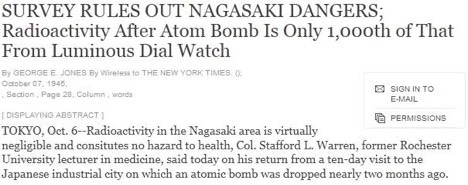
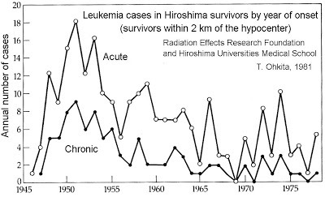
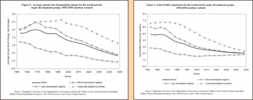
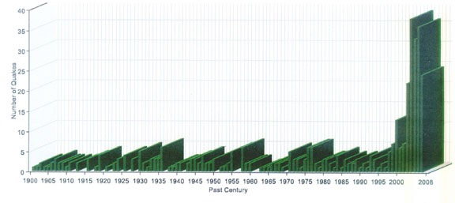
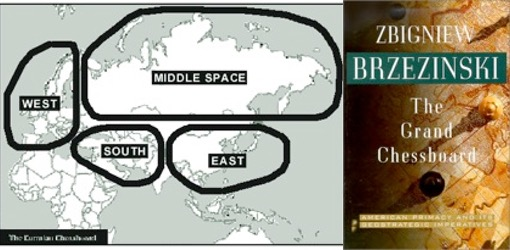
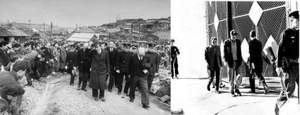
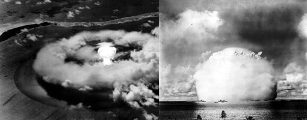
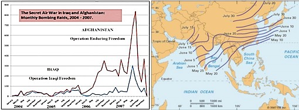
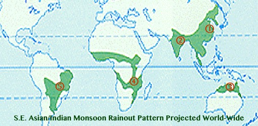
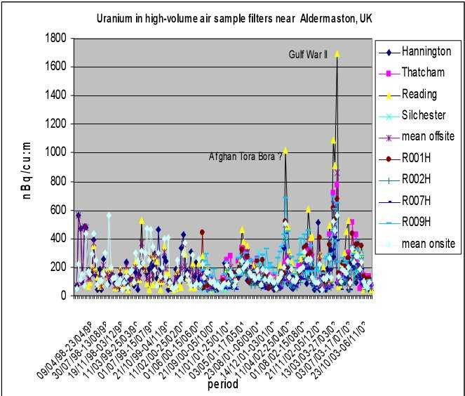

![20120724 - 7-24-2012 The More We Learn - quote from David Rockfeller -_thumb[2]](../media/20120724---7-24-2012-the.jpeg)


FUKUSHIMA: IMPACT OF FALLOUT ON OCEANS
Leuren Moret, January 31, 2014
PART 1: AN UNPRECEDENTED RELEASE OF RADIOISOTOPES TO THE OCEAN
To the superficial observer it must look as if the armies of the two superpowers hold one another in balance. The truth is different. The truth is that these two armies are the sweetest allies, for without the Soviet army we would not need the American Army, and vice versa. The fruits of the labors of the citizens of these two countries would not go to their Defense Departments. Thus the two great armies work in concert, promising fear and hatred to prevent peace from breaking out. They fight peace with all their might. What we really need is a defense department against Defense Departments.1 (1970)
Albert Szent-Gyšrgyi, Hungarian physiologist and 1937 Nobel Prize winner
Out of World War II came the nightmare of new exotic technologies, nuclear and Tesla science misapplied, secretly weaponized to benefit the financier elite rather than for the benefit of humanity. More horrific technologies than had ever been created before, these technologies were blithely introduced to the public with a likely cover story (such as the "miracle of the Nuclear Age"), by bribed officials and politicians. During the Cold War, the Soviets and US (assumed to be bitter enemies) secretly co-developed the HAARP technologies with unlimited budgets and plausible deniability, under the safe cover of ballistic missile defense, Star Wars and other Department of Defense (DOD) programs.2 This secret project at Livermore Nuclear Weapons Lab was called the "Woodpecker Project" when the Soviets turned it on, July 4, 1976, (the 200th Anniversary of the U.S.), and later it was renamed the High Frequency Active Auroral Research Program (HAARP) for the U.S. facility in Gakona, Alaska.
As the 20th century advanced, the financier elite became heavily involved in getting rich off world war and the manufacture of the new weapons of mass destruction that modern technology made possible. Warfare and weaponry, combined with control of credit manufactured through the leveraging of industrial production, were to be the primary means of putting nations and their populations into debt. A materialistic slave society was being created, which books like "1984" warned against. Humanity was lured into compliance through the fantasy world brought about by the mass media by means of advertising, cinema, and television. Another enticement was the growing availability of mass-produced consumer goods.
Richard C. Cook, former U.S. Federal Government Analyst (2008)3
The public has been slow to comprehend that those technologies and their deadly byproduct, global nuclear pollution, are a secret and invisible global war against civilian populations. It is the perfect mechanism to invisibly and efficiently carry out a City of London-ruling elite global depopulation agenda, and their long desired enslavement of humanity. In the 1920's the Rockefellers transferred the depopulation agenda to the U.S. from the Rhodes-Milner Round Table conferences in the UK and referred to it as “Eugenics."
J.D. Rockefeller III set up the Population Council in 1952 which, ever since, has been advocating zero population growth in the US. In 1972 this sentiment was echoed by Lawrence Rockefeller (CFR, Bil, TC) who was appointed by Nixon to lead a commission into population growth...
Ivan Fraser and Mark Beeston, "The Brotherhood and the Manipulation of Society", Web: http://www.theforbiddenknowledge.com/manipulation/
Bertrand Russell, a British ruling elite depopulation insider, openly lectured on aspects of that agenda in his Oxford lectures in the 1930's. His book, The Impact of Science On Society4, is essentially a blueprint he presented in three lectures for the enslavement of free thinking humanity, and a perfect road map for global genocide. Russell proposed that man's suicidal behavior, should be countered by one world government, which should have a monopoly of armed force, in order to impose peace. [Consider the outcome if Monsanto bought the domestic arm of the Blackwater mercenary army in the U.S. for similar goals.] This "solution" could result in a monopoly that leads to a single world oligarchy. Nuclear technologies, disasters, and policies over the past decades have been an essential mechanism to bring about such a transition, with the effects of Fukushima vastly accelerating the implementation of such a plan to break down and take down the Western Economy (Japan, U.S., Europe) while pumping the new Russo-China centric world economy.
The Lies of Hiroshima and Nagasaki Are The Lies Of Today

FIG. 1: NEW YORK TIMES DISINFORMATION HEADLINES, SEPTEMBER 13, 1945 -"NO RADIOACTIVITY IN HIROSHIMA RUIN": The New York Times was the main mouthpiece for the propaganda machine promoting atomic bombs and denying the atomic bomb sites of Hiroshima and Nagasaki were still contaminated with radiation. Reporters were not allowed to see the effects (right - shadow of vaporized person bombed in Hiroshima), and some journalists were murdered for reporting about the bombings. William L. Laurence, was the special NY Times reporter on WW II, and in a "monopoly propaganda position" on the payroll of General Groves, head of the Manhattan Project. Laurence was in the cockpit of the military plane that veered 5 miles off course to drop the atomic bomb "Fat Man" on the Urukami Cathedral in Nagasaki, killing two thirds of the Christians in Urukami District5. Source: (Left) - Hiroshima Peace Museum; (Middle) - "No Radioactivity In Hiroshima Ruin," New York Times, September 13, 1945; (Right) Hiroshima Peace Museum.
After WW II ended, disingenuous declarations were issued by the U.S. Government, that "nuclear weapons were necessary to end World War II" after using them for the first time in world history in August 1945.(6) Rather than dropping them on Japanese military targets, instead they were "tested" ("Little Boy" was the first uranium atomic bomb that was named for Roosevelt, and "Fat Man" was the first plutonium bomb named for Churchill) on the civilian populations of Hiroshima and Nagasaki, the largest hidden Christian (Kakure Kirishitan) communities in Japan from the Portuguese Jesuit period in the 1500's.(5) Christianity had been spreading like wildfire across Asia before WW II, and the City of London financiers did not want another Christian population traditionally opposed to usery centered in Asia and united with Soviet Russia, Germany, and the U.S., the three strongest Christian countries in the world. Col. Henry Stimson, the Secretary of War in WW I and II, prevented General Groves and the military from selecting the cities targeted for the first atomic bombs in world history:(7)
This is one time I'm going to be the final deciding authority. Nobody's going to tell me what to do on this. On this matter I'm to be the kingpin and you might as well get that report [atomic bomb targets chosen by Army] over here.(7)
As a member of the secret society "Skull and Bones" for the ruling elite (secret government) at Yale, Col. Stimson was also a Wall Street banker with ties to the City of London financiers and Winston Churchill.

FIG. 2: NEW YORK TIMES DENIES NAGASAKI RADIATION DANGER: The epicenter of the atomic blast was the Urukami district, the heart and soul of Catholicism in Japan since the sixteenth century. Out of 12,000 Christians in Urukami District, 8,500 were killed. The U.S. Government has never apologized for one of the greatest crimes of WW II, a tragic hidden "nuclear holocaust" of hidden Christians in Japan. Col. S.L. Warren who denied the health hazard from radioactivity in this NYTimes article, failed to mention that as a Rochester University lecturer in medicine he was employed by the Rockefellers. Financiers, they profited obscenely from the atomic bombing of Japan in WW II, and by developing and selling surplus poison gas from WW I as a chemotherapy cure for cancer. . . the Rockefeller link once again between oil companies (Standard Oil) and patent medicine (John D. Rockefeller family).(8) Source: Jones G.E., "Survey Rules Out Nagasaki Dangers; Radioactivity After Atom Bomb Is Only 1,000th of That From Luminous Dial Watch," New York Times October 7, 1945.
August 15th: The Feast Day of the Assumption of Mary
The Spanish Jesuit St. Francis Xavier arrived in Nagasaki on August 15, 1549, on the Feast Day of the Assumption of Mary. The Catholic Nuclear Holocaust of Nagasaki occurred on August 9, 1945, when the atomic bomb (named "Fat Man" for Churchill) was dropped on Nagasaki and the Urukami Cathedral (named St. Mary's Cathedral, the largest cathedral in east Asia) during the Mass for the Assumption of Mary, completely destroying the church and killing all the people in the Church.(5) Out of 12,000 Catholics in the Urukami District, 8,500 were killed by the Nagasaki atomic bomb.[FIG. 3] Three days later on August 15, 1945, on the Feast Day of the Assumption of Mary, Emperor Hirohito gave a recorded radio address across the Empire announcing the surrender of Japan to the allies. From the atomic bombings over 175,000 Japanese died quickly, and an additional 200,000 Japanese died later from the effects of radiation in the combined Hiroshima and Nagasaki bombings.
Financier Elite Get Rich Off Of War and Weapons of Mass Destruction
The real question is: what was the hidden agenda that resulted in a U.S. military pilot on a top secret military mission deliberately going 5 miles off-course to drop the atomic bomb 500 feet above the Urukami Cathedral?(5) The large outcome, from the slight arbitrary change of the bombing target by the pilot, was the killing of the majority of hidden Christians in Nagasaki, and destruction of the largest Christian Cathedral in Asia.[FIG. 3] The Hiroshima bombing targeted the second largest hidden Christian community in Japan. The Hiroshima and Nagasaki Catholic holocausts blunted the Catholic evangelization of Asia, and the expansion of Christianity - a religion that traditionally has opposed usery. . . the realm of the International London Financiers.(5)
To Send A Message, Assassins Like An Anniversary
The hidden hand of the international financiers is also indicated by the selection of the targeted hidden Christian cities by Col. H. Stimson, the financiers' agent in the War Department in both world wars.(7) Throughout the history of persecution of Japanese Christians, the Feast Day of the Assumption of Mary appears repeatedly from the Jesuit period 400 years ago, through the atomic bombing of the two largest communities of hidden Christians in Japan.(5) The ironic symbolism in this example of the Feast Day of the Assumption of Mary, may be found in 1 Corinthians 15:54: "then shall come to pass the saying that is written, Death is swallowed up in victory."
Symbolism is another fingerprint on the hijinks of the satanic New World Order, playing false flags and disasters off of anniversaries, special events, and numbers (World Trade Center disaster "911", Hitler's Birthday "420", Fukushima disaster "311", Yale's secret society of Skull and Bones uses "322" on its logo which may refer to the death of Demosthenes and the absolute end of the last attempt at democratic self-determination as far back as the ancient Greeks).

FIG. 3: URUKAMI CATHEDRAL AFTER THE ATOMIC BOMB: On August 9, 1945, two thirds of the hidden Christian community in the Urukami District of Nagasaki was killed, and the largest Christian Cathedral in Asia was completely destroyed. Source: "Atomic Bombing In Nagasaki and the Urukami Cathedral", Cultural Institute. http://www.google.com/culturalinstitute/exhibit/atomic-bombing-in-nagasaki-and-the-urakamicathedral/QRfpvy4V?position=0%2C-1
Rockefeller Profiteering From Atomic Bombings of Japan
After the war ended, Hiroshima and Nagasaki were "land grabs" and "fire sales" for the Rockefellers, who bought up the contaminated cities for almost nothing. Large fortunes were made rebuilding the destroyed cities and selling the still radioactive real estate by the square centimeter.
In 1989, I entered a laboratory in the Environmental Dept. at Livermore nuclear weapons lab where I was working as a Staff Scientist. I noticed geologic drilling cores laid out on a table and asked where they had come from. The technician working on them casually responded to my question, "Our team just came back from Hiroshima and go 4 times a year to take samples. Hiroshima is still radioactive and so are the people. . . we take samples from them too."
Leuren Moret, Staff Scientist at Lawrence Livermore National Lab (1989-91)

FIG. 4: PROVING THE HYPOTHYSIS - NUCLEAR BLACKMAIL: The war crimes bombing of Hiroshima and Nagasaki resulted in many deaths, long lingering illnesses, miscarriages, birth defects, and mental impairment in affected populations, and was perceived as a total success by the US government. The Japanese government had denied all lawsuits since 1945, requesting medical care and government financial support for many Hibakusha (radiation survivors) who could not work. In the summer of 2003, Ms. Moret went to Japan with a new radiation risk model (ECRR) and worked with lawyers nights during the long hot summer in Tokyo, to effectively present radiation science in the courtroom. Just one year later, with the new risk model before the court (challenging the fraudulent US military risk model based on their own studies in Hiroshima), the lawyers won the first two lawsuits for compensation to Hibakusha in the most conservative courts (Nagoya and Hiroshima). The impenetrable nuclear barrier was broken, the Hibakusha received the first recognition of their atomic bomb related illnesses from their own government in 60 years, and many lawsuits have been won since then. Unfortunately, despite the atomic bombing of Japan offending the global community, the reality is that a whole new highly profitable “industry of global nuclear death” was born. The nuclear troops had been encouraged by the outcome of the racist atomic bombings of Japan, to develop a new kind of nuclear war. Image Source: Ohkita T., “Leukemia Cases In Hiroshima Survivors by year of onset”, Radiation Effects Research Foundation and Hiroshima Univ. Medical School, 1981.
The Rockafellers also made fortunes refinancing and setting up corporations in post WW II Japan, such as SONY (Standard Oil of New York), that most people believe is Japanese owned. SONY gave the Rockefellers corporate standing in Japan and a seat at the table of the Japanese economy through the Ministry of International Trade and Industry (MITI), one of the most powerful agencies in the Japanese government.
[I] was assigned the job of "Military Manager of Tokyo International Airport" during the period of the U.S. military occupation of Japan. At that time it was the third busiest airport in the world, not only because of the Korean War activity. . .
I began to notice that day after day the few Japanese transport aircraft available, and countless large commercial aircraft from USA Charter Companies began to jam the parking ramp on Tokyo Airport. They were loaded with items from the States.
The name SONY began to appear at the [Tokyo International] airport after the flood of post-war recovery money, and one of the meanings of those four letters is "STANDARD OIL OF NEW YORK."
The Rockefellers had arrived to re-finance Japan.
What this meant was that during those "MacArthur" days Rockefeller money was flooding Japan; and money such as that. . . kind of "money" began this amazing job of rebuilding Japan.
Col. L. Fletcher Prouty, "Letter of the Month" Dec. 3, 1997 http://www.prouty.org/letter11.html
Nuclear Power: A Slow Form of Nuclear War Against the Human Population
. . . I'll be philosophical. Until about two billion years ago, it was impossible to have any life on earth; that is, there was so much radiation on earth you couldn't have any life, fish or anything. Gradually, about two billion years ago, the amount of radiation on this planet and probably in the entire system reduced and made it possible for some form of life to begin… Now when we go back to using nuclear power, we are creating something which nature tried to destroy to make life possible. … Every time you produce radiation, you produce something that has a certain half-life, in some cases for billions of years. I think the human race is going to wreck itself, and it is important that we get control of this horrible force and try to eliminate it… I do not believe that nuclear power is worth it if it creates radiation. Then you might ask me why do I have nuclear powered ships. That is a necessary evil. I would sink them all.
Adm. Hyman G. Rickover, the Father of the Nuclear Navy on the hazards of nuclear power in testimony to Congress (28 January 1982).
Nuclear power, a U.S. Navy technology developed for submarines, was sold to the American public (through the Rockefellers and U.S. Presidents Eisenhower and Ford) with the false promise that it would provide "electrical energy too cheap to meter". Yet it has proven to be the most expensive source of energy, and the most lethal, that only a government can afford to subsidize with public money.
Nuclear energy was introduced to the U.S., as atmospheric testing ended by the Partial Test Ban Treaty, was ratified in 1963 by the Senate and signed by President Kennedy. In order to keep the death rates up in the U.S., caused by exposure to bomb testing fallout, nuclear power was pushed as the replacement to continue the domestic depopulation and dumbing down of children from radiation related brain damage.(9)(10)(11)(12)(13)(14) The permanent brain damage in the U.S. (and to some extent in other countries) that has resulted from exposure to nuclear technologies includes: a 12% permanent decline in SAT scores (US) by 1963 for children exposed to radiation in utero (10), in-utero brain damage to children exposed to atomic bomb radiation (11)(12), the highest rate (26%) of mental illness (US) in the world (13), and a significant global increase in violence in young men in large cities following nuclear bomb tests.(14) Due to brain damage in American children caused by exposure to nuclear technologies, Asians have taken over science in the U.S. in the past 20+ years. American students cannot compete (math, physics, science in general) with Asian, Indian and other foreign students from countries with less exposure to nuclear pollution than the U.S. Since science is the key factor for the financiers to make large sums of money, the effects of nuclear pollution on the U.S. population is going to negatively impact the economy very substantially.
Because a society survives on the power of its ideas, the final decline of the U.S. from the effects of the Fukushima nuclear disaster is guaranteed.

FIG. 5: UN REPORT 2008: POPULATION AND FERTILITY NUMBERS DECLINEING GLOBALLY FOR ALL COUNTRIES AND REGIONS SINCE 1950. A pronounced global decline in population (left) and global decline in fertility (right) since 1950, can be linked to nuclear pollution from atmospheric testing, nuclear power, Chernobyl nuclear disaster, depleted uranium and 4th generation nuclear weapons wars (1990 to present). Projected to 2050, the global population will be drastically reduced, and fertility will decline to 2 children per woman. Source: UN REPORT: "World Population Prospects: The 2008 Revision - Highlights" http://www.un.org/population/publications/wpp2008/wpp2008_highlights.pdf
Initially, Superpower countries that were the first to embrace nuclear weapons and nuclear power had an earlier decline in population and fertility (Fig. 5: bottom line on left graph, solid black line is world average) than non-nuclear states (top two lines on left graph), from the effects of local and regional nuclear pollution. Eventually, the chronic exposure and cumulative effects of global nuclear pollution from battlefields, nuclear power plants, bombing and gunnery ranges, wars in Iraq and Afghanistan, the Chernobyl global nuclear disaster, and most recently the Fukushima global nuclear disaster, went global. Global distribution of nuclear pollution resulted in a uniform global decline (in population and fertility) indicating an environmental cause, and superpower nations, developing nations, and less developed regions - are now on the same trajectory.(Fig. 5).
Additional permanent chronic exposure, of North America to the invisible war of fission products from Fukushima, over the next 100+ years, will destroy the genetic and mental future of North Americans. The Fukushima disaster will severely damage the U.S. economy, and end the dominant role the U.S. has played globally, just as the Chernobyl nuclear disaster destroyed the Soviet Union ending the Cold War.(9)
HAARP: THE TECHNOLOGIES OF INVISIBLE WAR
Pretend Enemies and Secret Weapons: Cold War Soviet-US Co-Development of Tesla Technologies
The more we do to you, the less you seem to believe we are doing it.
Joseph Mengele (Dr. Death), a German Schutzstaffel officer and a physician in the Nazi concentration camp at Auschwitz

FIG. 6: MIND CONTROL: Former Vice President Nelson Rockefeller (center) with Edward Teller (left), visited the dedication of the new building for the University of California at Davis Department of Applied Science in 1977. The secret animal studies on mind control at the U.C. Davis monkey colony were adapted for human application in the Dept. of Applied Science, and transferred to a safe house in Livermore. There, Livermore Lab conducted secret mind control experiments for HAARP applications on children, and on Sirhan Sirhan three days before the Bobby Kennedy assassination.(15) HAARP mind control technology was Teller's pet project for the Rockefellers. Photo Source: LLNL
1978 Mysterious Suicide Epidemic in Oregon Traced To Navy Transmitter And HAARP Frequencies for Mind Control Carried on HAARP Over the Horizon Radar (OHR)
In the quiet little town of Eugene in southern Oregon, a sudden overnight suicide epidemic in 1978 ended the lives of dozens of people with no apparent cause. After investigations involving the media, the Feds, FCC, researchers, and locals, it was determined that the town was inundated with microwave transmissions carried on Over the Horizon Radar (OHR) at frequencies that could be used for mind control and to modify human behavior.(16) Federal officials identified the source of the transmissions as the Soviets (a coverup since the Soviets were secretly codeveloping HAARP with the U.S. at the Livermore nuclear weapons lab for the US Navy), but a second Federal agency, the FCC traced it to a Navy transmitter in Dixon, California.(17) Dixon is the more likely antenna location identified as the cause by the F.C.C.. The FCC owned the farmland and huge antenna array surrounding the safe house in Livermore where the HAARP mind control technology was tested on humans after transfer from the U.C. Davis monkey colony. (FIG.6). The mind control program for HAARP may be the most important of the HAARP applications, at least the Rockefellers thought so.
The Navy transmitter in Dixon just happened to be across the freeway from the secret monkey colony at U.C. Davis where Dr. Edward Teller and former Vice President Nelson Rockefeller [Fig. 6] were involved for decades in the animal studies to develop HAARP mind control.
The research results from the monkey colony at UC Davis were tested on humans and children in a safe house in Livermore, surrounded by a very large array antenna field, in sight of the Livermore nuclear weapons lab at one of the locations where the Soviets co-developed HAARP with U.S. scientists. Dave Silvey, an MKUltra experimental victim at the safe-house as a child, indicated that the safe-house appeared to be the prototype for the Gakona, Alaska, HAARP facility.(15)
In March 1978, the city of Eugene, Oregon, found itself inundated with microwave radiation. The Oregon Journal reported: "Mysterious Radio Signals Causing Concern in Oregon." Federal government specialists blamed the Soviets, but the Federal Communications Commission concluded that the signal - recorded throughout the state of Oregon - came from a Navy transmitter in [Dixon] California.
Oregonians statewide complained of headaches, fatigue, inability to sleep, reddening of the skin, anxiety, "clicks" in the head and a "buzz" harmonizing with a high-pitched wail. Canadian researcher Andrew Michrowski wrote to Prime Minister Pierre Trudeau on September 19, 1978, citing a Pacific Northwest Center for Non-Ionizing Radiation study that found the signals "psychoactive" and "very strongly suggestive of achieving the objective of brain control" Source: Alex Constantine, "Hearing 'Voices; The Hidden History of the CIA's Electromagnetic Mind-Control Experiments,'" HUSTLER, January (1995). Also see: Psychic Dictatorship in the U.S.A., Alex Constantine, Portland, OR: Feral House, 1995.
Refocusing War and Warfare: Invisible Technologies With A Global Reach
The Cold War was the turning point for refocusing warfare - one that targeted civilians rather than soldiers on battlefields, with new kinds of energy weapons that transmitted invisible frequencies with dangerous and even lethal biological and emotional effects. The incorporation of nuclear technologies in this new invisible war against civilians, produced extremely deadly nuclear pollution as an invisible and very efficient irreversible biological weapon. Nicola Tesla would turn over in his grave had he known how his own genius would be twisted and misapplied in order to weaponize Nature and enslave humanity, but perhaps he did know. Tesla and many other scientists around the World, at the time, attempted to use scientific discovery to benefit humanity, but J.P. Morgan, the New York banker, and the international financier would in the end, pervert his brilliance and innovative ideas in order to turn them against humanity.
No amount of fiddling with capitalism to regulate and humanize it, no pointless rhetoric on the virtues of capitalism or socialism, no billions or trillions spent on “defense” of the “American dream” can for long disguise this failure. The evidences of it are everywhere: eroded, wasted, or degraded soils; damaged or destroyed ecosystems; extinction of species; whole landscapes defaced, gouged, flooded, or blown up; pollution of the whole atmosphere and of the water cycle; “dead zones” in the coastal waters; thoughtless squandering of fossil fuels and fossil waters, of mineable minerals and ores; natural health and beauty replaced by a heartless and sickening ugliness. Perhaps its greatest 'success' is an astounding increase in the destructiveness, and therefore the profitability, of war. Source: Wendell Berry, American novelist, poet, environmental activist (anti-nuclear), philosopher, and farmer.
A simple sentence sums up the bankers relationship to Nature since the onset of the Age of Discovery, that abstract wealth, created for accumulation implies the destruction of Nature as concrete wealth. Weapons of Mass Destruction exist for the bankers, ultimately making HAARP the perfect Tesla-based weapon of choice for destruction of Nature in order to create new concrete wealth through: (I) Banking, (II) Mining, (III) Agriculture.
In the 1930's, after he died, Tesla energy technologies were secretly stolen from Tesla by the FBI, for the Rockefellers, and were co-developed by the U.S. with the Soviet Union under military black budgets during the Cold War. In a secret collaboration between the Soviet Union and the U.S. Government, permanent Russian Arctic drift stations(18) established in 1932, atmospheric nuclear bomb tests, secret mind control and social engineering experiments (by Tavistock, MKULTRA, universities and scientific organizations) on Americans. Unlimited funding supported the classified development of HAARP technologies at Lawrence Livermore nuclear weapons lab and in the Soviet Union. The nuclear weapons tests injected large amounts of ionizing radiation high into the earth's magnetic field (Van Allen belts) and Ionosphere, and were conducted in a secret partnership by the US (Univ. of California, Stanford Univ., Bechtel, American Geophysical Union - AGU, International Electrical and Electronics Engineers-(IEEE)), Soviet Union (KGB, military), and Britain (Marconi Corporation, BAE Inc. etc.).
When atmospheric testing ended, the Space Shuttle program replaced bomb testing, by injecting chemtrail components (including radioactive particulates) from rockets and the Space Shuttle exhaust manifold into the Van Allen belts, in order to weaponize the atmosphere and space with HAARP. And a new global energy weapon with many applications was developed for the international financiers to enslave humanity: mind control, subsurface mineral exploration from space, missile shield, weather modification, communications disruptance, and tectonic warfare. And in 50 years when the information is declassified, we will discover even more.
FUKUSHIMA: Nuclear Tectonic Warfare
…the worst technogenic disaster in history… Indeed it is now clear that the political repercussions from Chornobyl accelerated the collapse of the Soviet empire… It is a global environmental event of a new kind. It is characterized by the presence of environmental refugees; long-term irreparable damage to ecosystems… (It) illustrates the great responsibility that falls on the shoulders of scientific and other experts who give advice to politicians on technical matters… and has taught the nations of the world a dreadful lesson about the necessity for preparedness if we are to rely on nuclear technology… We have embarked on a new post-Chernobyl era, and we have yet to comprehend all the consequences. Source: Dr. Yuri M. Shcherbak, Russian epidemiologist and former Ukrainian Ambassador to U.S. (9)
After Chernobyl, life expectancy in Russia had a serious decline:
Life expectancy in Russia, already lower than in any other developed country, has plummeted again this year, and scientists and public health officials say they cannot explain the continuing steep decline… Russia has become the first country in history to experience such sustained reversals in its health statistics. Source: Specter, M., “Plunging Life Expectancy Puzzles Russia,” NYTimes, August 2, 1995.
Just as the Chernobyl nuclear disaster was designed as the mechanism to take down the Soviet Union and end the Cold War, HAARP was used to trigger the Great Tohoku earthquake (March 11, 2011) causing the tsunami that destroyed the Fukushima nuclear power plant. Fukushima is by far the most serious nuclear disaster in the world, hundreds of times worse than Chernobyl, and will end the dominance of the Western economy as Fukushima radiation continues to poison North America and the rest of the world with no way to turn it off. (19)

FIG. 7: USGS WORLDWIDE DEADLY & DESTRUCTIVE EARTHQUAKES 1900-2006: In 1995, fourteen key HAARP patents, were transferred by the CIA, to British BAE Systems Inc. Coinciding with the timing of that transfer, an extraordinary off-scale worldwide increase in large magnitude earthquakes occurred. Geophysicist and Jason scientist Gordon J.F. MacDonald developed "tectonic warfare" for HAARP, and in 1968 warned about it in a chapter, "How To Wreck The Environment" (20), on future horrific weapons of war. Many off-scale extreme weather events, rogue waves, election interference, and other kinds of tectonic disasters have occurred all over the world, economically benefiting the international financiers and other vested interests at the expense of the 85% of humanity that owns nothing.(21) Source: "Worldwide Deadly & Destructive Earthquakes 1900-2006 between Magnitudes 6 and 8." http://earthquake.usgs.gov/regional/world/historical.php
War and Warfare Against Humanity
The global nuclear disasters that resulted from the hidden agenda behind such lethal technologies: atmospheric testing (1947-1963), Chernobyl (1986), and Fukushima (2011), have exposed nuclear technologies and programs, not as the "miracle of the Nuclear Age" but as the mechanism for the indiscriminate genocide and extermination of not only the human population but also the destruction of the biosphere and all living things.
As time goes on the truth has emerged that none of this was "accidental", but well planned and strategically carried out war and warfare against humanity, over a period of more than 100 years by the secret vested interests of a global network of elites: City of London financiers (Rothschilds and Goldsmiths for example), old banking bloodlines, British (Queen Elizabeth) and Dutch monarchs (Queen Beatrice) with the depopulation agenda administered through their husbands Prince Philip and Prince Bernhard and the World Wildlife Fund, Royal families, Bertrand Russell, Rockefellers, Wall Street financiers and many others.
GANGSTERS IN TIARAS:
The East India Company and the Dutch East India Company
“The Queen of England Deals Extensively in $17 Trillion Depleted Uranium Trade”(55) http://www.nationofchange.org/queen-england-deals-extensively-depleted-uranium-trade-1393604116
“High Court Judge and The Child Sex Ring: Adviser To Queen Was Founder of Paedophile Support Group To Keep Offenders Out of Jail”(56) http://www.dailymail.co.uk/news/article-2576451/High-court-judge-child-sex-ring-Adviser-Queen-founder-paedophile-support-group-offenders-jail.html
"The Origins of Oil - Falsely Defined in 1892"(57) https://www.youtube.com/watch?v=vdSjyvIHVLw
Hidden at the center of this global game, is Queen Elizabeth II, the sovereign ruler of England and the British Commonwealth and by far the wealthiest person in the world.(21) The feudal monarchical principle of ultimate ownership over a realm, gives her legal claim to 6,698,146,531 acres valued at $33,490,732,655,000.(21) She also owns the mineral rights to the entire Commonwealth (home country and 16 dependencies and territories), including the offshore territorial waters, and the majority of the uranium resources in the world.(55) She personally owns BP and has a personal shared ownership of Shell Oil with the Dutch monarch. When citizens "buy" property in the Commonwealth and England, they are only buying the top 12 inches of dirt because she owns everything below 12 inches from the surface of the land. Queen Elizabeth also owns 52% of the offshore banks located mostly on islands that are former British colonies.(21) The global drug economy, Dope, Inc.(22), still managed by the British East India Company and the Dutch East India Company (now underground) through Jardine and Mathieson in Hong Kong (relocated to Bermuda after Hong Kong was turned over to China), has very strong but hidden ties to the British and Dutch monarchs.(21) Dope, Inc. drug money is laundered through offshore banks, the majority of them belonging to Queen Elizabeth.(21) The transfer of fourteen key HAARP patents in 1995 to BAE Inc. in the UK, as well as other evidence, indicates that England is the lead player in global HAARP operations.
Since its 'discovery', the history of the USA has been the history of ethnic cleansing, imposition of power, slavery, mass exploitation and the worship of wealth. The U.S. president, generally accepted as the most powerful man in the world, is a slave to his prime allegiance, the Brotherhood. Source: Ivan Fraser and Mark Beeston, “The Brotherhood and the Manipulation of Society”, (From the “Introduction”: ¶ 19). http://www.theforbiddenknowledge.com/manipulation/
(a) (b) FIG. 8: THE NEW WORLD ORDER AND THE FUKUSHIMA BROTHERHOOD: Queen Elizabeth gave future U.S. President Obama (8a - left) and Dr. Steven Chu (8b - left) each $500,000,000 two years before Obama was elected in 2009. Dr. Steven Koonan (8b - right) worked as Chief Scientist at BP (owned personally by QE II) and arranged the grant to Chu as Director of the Lawrence Berkeley Lab, home of the Manhattan Project and now part of the Univ. of California. In 2009, Obama also received the Nobel Peace Prize (apparently for his "capacity for war"), and Chu received the Nobel Prize for Physics in 1997. [The Nobel Prizes are Rothschild Controlled] Two years before the Fukushima disaster in 2011, President Obama appointed Chu to be Sec. of Energy, and Dr. Koonan was selected by Chu to be his Undersecretary for Science. Source: (8a) Chris Jackson, Getty Images, (8b) S. McConnell U.C. Berkeley, from the NYTimes "BP's Ties To Agency Are Long and Complex", May 25, 2010.
That would explain why the 2011 Gulf oil disaster in the Gulf of Mexico involved a BP drilling platform, with evidence that HAARP technologies (Blue Beam) caused the disaster. This makes Queen Elizabeth personally responsible. She will be the direct benefactress of any economic benefits that emerge from that ecological disaster, with a hidden agenda that is likely to be positioning for a land grab, and/or hijacking mineral resources, and depopulation. Another HAARP event directly involving Queen Elizabeth was the 1995 Kobe earthquake, involving HAARP and two Japanese transmitters east and west of Kobe.(23) The international financiers engineered the Kobe earthquake that bankrupted Barings Bank, Queen Elizabeth's personal bank and the last Merchant bank in non-Rothschild hands. Two years after the Kobe disaster, Barings bank was sold for £1 through a Dutch company to the Rothschilds.(24) In fact, Queen Elizabeth was intimately involved in the Fukushima HAARP created tectonic and nuclear disaster.(25) The orders on the Fukushima disaster response came directly from BP in England to TEPCO and the Japanese government, through the Secretary of Energy Dr. Steven Chu (in President Obama's cabinet) and his Undersecretary for Science BP's former Chief scientist Dr. Steven Koonan. Both Chu and Obama received $500,000,000 each from Queen Elizabeth two years prior to Obama's inauguration in 2009.(26) With that money, Dr. Chu as Director of the Lawrence Berkeley Lab before Obama's election, established an Energy Industial Park at the Lawrence Berkeley Lab, for BP research. She will not have to pay for the research, but she will get the patents as normal practice, to corporate donors, at the University of California.
Dr. Steven Koonan’s bio on the DOE website listed him as a theoretical physicist from Cal Tech, with a specialty in “ocean environments”. He also was head of the Jasons, the successors to the Manhattan Project scientists, who are civilian scientists under contract to the Pentagon through the MITRE Corporation. The Manhattan Project scientists created nuclear weapons at Lawrence Berkeley Lab in WWII, and the Jason scientists created HAARP at Livermore nuclear weapons lab, U.C. Berkeley, and Stanford University, for the benefit of the international financiers, under Koonan’s leadership.
Grand Chessboard Game of “Pump and Dump”: Tectonic Nuclear War
Since 1945, nuclear “war” has been carried out overtly (ex.: Hiroshima and Nagasaki – atomic bombs; Iraq and Afghanistan – Depleted Uranium munitions, exotic 4th generation nuclear weapons). But more carefully and efficiently it has been carried out covertly (ex.: the Chernobyl nuclear disaster bankrupted the Soviet Union and ended the Cold War). The Fukushima tectonic nuclear disaster will bankrupt the Western Economy in order to transform the world to a China-centric world economy (FIG. 9).

FIG. 9: BRZEZINSKI’S MAP OF THE EURASIAN CHESSBOARD: In the 20th century the South region was captured, secured, and permanently contaminated with “depleted uranium” wars for its vast energy resources. (27) The Middle Space will be the new focus of international financiers, as they break down the Western Economy (Japan, U.S., Europe) while transforming Eurasia into a new China- and Russia-centric global economy. Just as Chernobyl caused the downfall of the Soviet Union ending the Cold War, the nuclear pollution from Fukushima will cause the downfall of the Western Economy. Ending the 20th century energy wars in the South Region, a new millennium begins with a 21st century transformation to a new Russo-Asian-centric world in the Middle Space (Russia and China). (28) Source: Z. Brzezinski, The Grand Chessboard: American Primacy And Its Geostrategic Imperatives, Basic Books (1998), Fig. 1. (37)
The energy resources from the South region and rich mining deposits of minerals from SE Asia will be sold at great profits by vested interests (international financiers) to China as it develops and Europe collapses. This is a profitable game of global economic “Pump and Dump” that has been utilized for centuries. (28)
Wealth is Never Created By Destroying Things
Traditionally wealth in much of the world was created through peaceful trade over a period of thousands of years. The tremendous accumulated wealth from rich cultural exchange along the Silk Road was not squandered on war, but enriched the people of vast regions. Absent at that time from the Asian world economy was the genocide and plundering introduced by European warships: Portuguese Jesuits, British East India Company, followed by the Dutch East India Company. The world economy was transformed by capitalism from peaceful prosperity through trading, to one based on disaster capitalism where winner takes all: kill, destroy, plunder, depopulate, and permanently poison the environment.
The two greatest moral crimes of World War II were (1) the dropping of the first atomic bombs on civilians, intentionally targeting Japanese Christians in both atomic bombings, and (2) colossal ruthless looting personally supervised by Emperor Hirohito and carried out by the Imperial Princes throughout China and South East Asia. When a partial inventory of the loot was made, with the help of former President Herbert Hoover, General MacArthur, and Col. Edward Lansdale (OSS/CIA), the international financiers in London were stunned to find that just the gold alone was more than they knew even existed in the world (and much greater than the Nazi gold treasure). This stunning Silk Road treasure from 5000 years of accumulated wealth, is testimony to the cultural power of ideas and the wise financial strategy of accumulating and creating great wealth and benefits from peaceful trading along the Silk Road. (29, p.106)
IMPERIAL CONSPIRACY OF THE EMPEROR, HIS SHOGUN, AND NINJA:
Yamashita’s Gold and the Secret Treaty of Verona 1822
Comparing the outcome of World War II through the lens of Emperor Hirohito of Japan, who under the cover of WW II secretly looted cultural treasures and wealth (underestimated at $74 trillion) from 12 South East Asian nations, (29) and Col. Edward Lansdale who spent his career as an assassin in foreign wars, then helped assassinate John F. Kennedy his own “President for the people” in 1963, teaches a valuable lesson about the failure of such strategies. [FIG.10] Ironically, after the liberation of Japan, Lansdale was involved in the U.S. team that extorted the stolen treasure from Emperor Hirohito for exoneration of his war crimes. Emperor Hirohito briefly gained a great treasure by force and extortion, but destroyed his own country, and then lost the treasure to the thieves who created the war to begin with: the London financiers. There is not honor among thieves. Not this kind.
General Douglas MacArthur and former US president Herbert Hoover walked away from the occupation with huge amounts of gold from that deal. Hoover had $100 million in gold bullion in his bank account when he died (his son had to ask permission from the U.S. government to sell it after he died), and MacArthur had $1 billion in gold in a Hong Kong branch of Sanwa Bank (owned by the Emperor) held jointly with Hirohito. (29, p.194) Ironically in the process of determining how to proceed with the fate of Emperor Hirohito and his treasure after Japan surrendered, a collusion resulted between the Emperor and the Shogun (General MacArthur), and made the resources of America’s Ninja (Col. Lansdale) available for utilization in the reorganization of Japan.
Following WW II and the discovery of the looted treasure, General MacArthur and Col. Edward Lansdale flew from Asia to Washington D.C. and met with President Truman to decide what to do with the vast treasure Emperor Hirohito had looted from South East Asia and China, some of which had been recovered from Japan, from under the Emperor’s palace, Nagano, and some from secret repositories hidden in the jungles of the Philippines. (29, p.106) It was decided that the treasure would be divided into two secret funds. One would be used to fund the political and government setup of post-WW II Japan, by funding Japanese WW II multigenerational war criminals to set up new political parties, a Parliament, and subdue student movements and unions. (29, p.106) Col. L. Fletcher Prouty stated from his personal observations as U.S. military head of Tokyo airport in occupied Japan, that Lansdale "was in and out of Tokyo on secret missions with a hand-picked team of Filipino assassins, killing leftists, liberals and progressives". (30)

(1) Alfred Eisenstaedt—Time & Life Pictures/Getty Images (2)
FIG. 10: EMPEROR OF RUINS AND THE AMERICAN NINJA: (1) Emperor Hirohito in Post-War Japan during his first visit, in Yokohama in February 1946, to see living conditions in his country. (2) Colonel Edward Lansdale, a covert agent after Japan’s surrender, operating espionage, infiltration, sabotage, and assassination teams to set up and fund Japanese war criminals and maintain their power through the transition of Japan from a war economy to a ‘pacifist’ country. The photo (2) depicts Lansdale (OSS/CIA) walking past “the three hobos” at the assassination of John F. Kennedy in Dailey Plaza, Dallas, Texas, on November 22, 1963. Lansdale and the Joint Chiefs (Lyman Lemnitzer - USArmy, Maxwell Taylor - USArmy, Curtis LeMay - USAF) were the chief architects and engineers of the Kennedy assassination. Source: (1) “Emperor of Ruins: Photos of Hirohito in Post-War Japan, 1946”, LIFE.com http://life.time.com/history/emperor-of-ruins-hirohito-in-post-war-japan/#1 (2) Simkin J., “Edward Lansdale”, Sept. 1997-June 2013. http://www.darkpolitricks.com/2011/11/was-george-h-w-bush-involved-in-the-assassination-of-jfk/ (3) Col. L. Fletcher Prouty, USAF, "Ed Lansdale in Dealey Plaza Nov 22 1963", YouTube https://www.youtube.com/watch?feature=player_detailpage&v=5ATbhCUZxjQ
The second secret fund was set up for "providing money for political action funds throughout the noncommunist world” after WW II. (29) The gold bullion and treasure recovered by Lansdale was “moved by ship to 176 accounts at banks in 42 countries” by two CIA agents. (31) This basically extended and continued funding of the “Secret Treaty of Verona,” signed in 1822 by Russia, Prussia, Austria, and France to support Monarchists and their Divine Right to Rule, by defeating and overthrowing future democratically elected leaders globally, by citizens exercising their lawful right to self-determination. (32) The first democratically elected leader to be overthrown using the fund was President M. Mossadagh of Iran in 1953, engineered by the British.
Area bombing, saturation bombing, rocket bombing, bombing by atomic missiles — the indiscriminateness has steadily increased throughout the Second World War, until now no nation even makes a pretence of observing the traditional distinction between civilians and combatants, innocent and guilty, but all devote themselves methodically and scientifically to general massacre and wholesale destruction. Other practical consequences of our ‘nothing-but’ philosophies of life are the employment by civilized people, with a high standard of scientific and technological training, of torture, human vivisection and the systematic starvation of entire populations. And finally there is the phenomenon of forced migration — the removal at the point of the bayonet of millions of men, women and children from their homes to other places, where most of them will die of hunger, exposure and disease. Aldous Huxley, From Science, Liberty and Peace (1946)
The “perceived success” of the atomic bombings of Hiroshima and Nagasaki introduced a vicious and pernicious global agenda, of “Superpower nuclear blackmail” of weaker States and depopulation of vast regions, that has dominated the geopolitical scene since.
FALLOUT: A New Kind Of Nuclear War
The United States had demobilized its armed forces after World War II; new weapons, such as the atomic bomb, were seen as cheaper and more efficient than keeping large numbers of soldiers stationed abroad. Rather than nationalize key military industries, as Great Britain and France had done, the U.S. government opted to contract out its scientific research development to private concerns. The private sector, not bound by the procurement and personnel requirements of the Pentagon, could create new weapons faster and cheaper. RAND would be a bridge between the two worlds of military planning and civilian development. Alex Abella, Soldiers of Reason (2008).
This was the transition to privatization and the creation of a layer of plausible deniability for the government of the United States, as they no longer needed to be responsible for the supervision of the corporations’ creations. All they had to do was fund them, and then cooperate with the public relations campaigns that the corporations had created for the weapons systems.
Despite two to three years required to set up a bomb test, no time was wasted following the surrender of Japan and the end of WW II. Project Crossroads produced the first two atmospheric atomic bomb tests, “Able” and “Baker”, in 1946 at Bikini atoll in the Pacific, less than a year after Japan surrendered and WW II ended.

FIG. 11: OPERATION CROSSROADS: "Able" (left) and "Baker" (right) in the Bikini atoll, 1946, were the first nuclear explosions after Hisoshima and Nagasaki. Source: U.S. Government
These tests were followed by the hydrogen bomb tests. U.S. Government Castle Bravo H-Bomb Test was detonated in the Marshall Islands on March 1, 1947:
In a harbinger of events to follow, traces of radioactive contamination from ZEBRA were detected at the Naval Station Kwajalein, 423 mi distant from the explosion site. The nuclear cloud evidently mixed with upwelling surface moisture, and a “rainout” of radioactive contamination was deposited by a passing squall. And for the first time, the term “fallout” was used in reference to radioactive particles from a nuclear cloud drifting downward to the Earth’s surface. Malik, J. 1977 Note attached to Operation SANDSTONE report 23.4. from Kunkle, T, Ristvet B., Castle Bravo: Fifty of Legend and Lore: A Guide to Off-Site Radiation Exposures, DTRIAC SR-12-001, Defense Threat Reduction Agency, January 2013: p.23.
President John F. Kennedy, a devout Catholic and a father, was the only U.S. President concerned with the deleterious fallout effects on American children from nuclear bomb tests.
A year earlier, in September of ’61, after the Soviets had disregarded a voluntary moratorium and detonated the largest ground-based ‘atmospheric’ nuke ever designed in meetings with scientists, he asked… about radioactive fallout. “Where would we be if testing had continued at the 1958 rate?” he asked Dr. Charles Dunham, director of the Atomic Energy Commission’s Division of Biology and Medicine. “Civilized man would have been in trouble,” Dunham said. “How does the radioactive fallout get to the earth?” he asked his science advisor, Jerome Wiesner. “The clouds are washed out by rain,” answered Wiesner. Kennedy looked out… into the garden. It was a rainy day and he asked: “You mean it’s in the rain out there?” “Yes” Wiesner said… Kennedy did not speak for a long time. President Kennedy, President Kennedy, Profile of Power, R.Reeves, [pp226-227].
From his own painful experience, the tragedy of his wife losing multiple pregnancies and one full term baby a few weeks after he was inaugurated as President, he was well aware of the danger of in utero exposure to fallout radiation. After reading a paper by Dr. Ernest Sternglass on the effects of fallout on American children, he was determined to end nuclear bomb tests by the U.S., Russia, and England. He was able to get the Partial Test Ban Treaty ratified by the U.S. Senate in the Fall of 1963, he signed it into law and was assassinated within two months.
Until the Partial Test Ban Treaty was signed, the atmospheric nuclear bomb tests were conducted high in the atmosphere where circulation is very slow, where the dynamic processes and storms are absent that remove radioactive particles from air masses, by rainout and snowout into the environment. Fifty years after bomb testing ended the legacy remains, 85% of the nuclear pollution is still suspended in the upper atmosphere with only 15% of the nuclear pollution released into the biosphere.
When the Russian MIR spacecraft was returned to earth, the external mitt covering and protecting the instrument package from solar radiation in space, was inspected and found to be contaminated with uranium and uranium decay products (Bi-214 and Pb-214 from the uranium-radium alpha decay series), indicating that even lower orbital space is contaminated with nuclear bomb test pollution (33).
The hidden agenda for many Soviet-US-British high altitude atmospheric tests, was development of Tesla technologies to co-develop HAARP in order to weaponize the ionosphere. Since then, nuclear and radiological (depleted uranium) weapons and technologies have come out of the sky and down to ground level, for the purpose of local, regional, and global depopulation using nuclear pollution, a much more efficient form of nuclear war, and another hidden agenda behind “the nuclear project”.
They'll pay for fire: I'll give another gift
To men, an evil thing for their delight,
And all will love this ruin in their hearts.
So spoke the father of men and gods,
and laughed.
– Hesiod, Theogony
tr. Dorothea Schmidt Wender
GOFMAN AND TAMPLIN: ‘Population Control’ Through Nuclear Pollution (1970)
The war was over and the two atomic bombs had been “demonstrated”. The immediate enthusiasm for development of the atmospheric testing program by the “Dr. Strangeloves” in the nuclear weapons community was not shared by many of the insiders, the Manhattan Project scientists who had worked on the Hiroshima and Nagasaki atomic bombs.
Years after relaying the orders from President Harry S. Truman to drop nuclear bombs on Hiroshima and Nagasaki, General LeMay said the actions were not necessary.
'Truman Told Me to Do It'
''We felt that our incendiary bombings had been so successful that Japan would collapse before we invaded,'' he said in a 1985 interview with the Omaha World Herald. ''We went ahead and dropped the bombs because President Truman told me to do it. He told me in a personal letter.'' A. Narvaez, “Gen. Curtis LeMay, An Architect of Strategic Air Power, Dies at 83,” New York Times, Oct. 2, 1990.
Many of them left the program immediately after the end of the war when the contract to build the two atomic bombs ended, disillusioned with nuclear weapons. They had never intended for the atomic bombs to be dropped on a human population, much less a civilian population, and many knew the perils of fallout.
As far as casualties were concerned I think there were more casualties in the first attack on Tokyo with incendiaries than there were with the first use of the atomic bomb on Hiroshima. The fact that it's done instantaneously, maybe that's more humane than incendiary attacks, if you can call any war act humane. I don't, particularly, so to me there wasn't much difference. A weapon is a weapon and it really doesn't make much difference how you kill a man. If you have to kill him, well, that's the evil to start with and how you do it becomes pretty secondary. I think your choice should be which weapon is the most efficient and most likely to get the whole mess over with as early as possible. Gen. Curtis LeMay, from R. Homes, The World at War: the Landmark Oral History from the Classic TV Series, 2011, p. 574.
During the 1950-60’s awareness of the environmental and health effects of the atmospheric tests increased opposition globally to the program, especially by the public. Some of those in the scientific opposition had realized that nuclear weapons were impractical for military use, and that the by-product of nuclear pollution produced was instead, a mechanism to carry out depopulation. The nuclear weapons insiders promoting development of even bigger bombs, such as Edward Teller (Dr. Strangelove) who enthusiastically promoted the hydrogen bomb, entered into a vicious and deceptive campaign of secrecy to hide the horrific effects from the public and to create compartmentalization and a need-to-know basis for dispersal of information that the public had a right to know since it affected every living thing in the United States.
The secrecy of the Manhattan Project extended like a heavy curtain over the U.S. war crimes in Hiroshima and Nagasaki, and to protect future nuclear projects. The excuse that information needed to be classified to cover illegal and global genocidal hijinks has proliferated since, and is the single greatest cause of the destruction of democracy in the United States.
As early as the 1960’s two high-level insiders at Livermore Nuclear Weapons Lab, Dr. John W. Gofman M.D. (a physicist on the Manhattan Project and a Medical Doctor) and Dr. Arthur R. Tamplin, were funded to do research on the biological effects of ionizing radiation for the U.S. nuclear weapons program. When they began reporting their findings at scientific meetings they suddenly lost all their research funding at Livermore. In protest, they left the lab and published a book in 1970, ‘Population Control’ Through Nuclear Pollution, exposing the truth and the dark politics of radiation – that depopulation is the real agenda for nuclear technologies. (34)
Radiation definitely ages the population so that it dies off from all causes at earlier ages than it otherwise would…[p. 85] …life-shortening now appears to be the major deleterious effect of fallout… Walter R. Guild, [from J.M. Fowler Ed., Fallout, Basic Books Inc, 1960, p. 91.].
Charles Weiner, Professor of the History of Science at MIT who knew Gofman and Tamplin, left an unfinished book when he died, a work on the history of social responsibility in science, from the atomic bomb to contemporary genetic engineering. It uses archival and oral history materials to document scientists’ complicity in, and resistance to, nuclear and biological weapons, their connections with citizens’ groups affected by environmental toxins and by fallout from nuclear testing, and anticipatory concerns about ethical limits in human genetic manipulation.
Dr. Weiner covered the heated debate and retaliation against Gofman and Tamplin:
Within the Atomic Energy Commission itself, there was almost an immediate response to gather the troops to refute Gofman and Tamplin, organizing AEC-funded scientists to write letters saying he was wrong. What they resented about Gofman was that the consequences of his research threatened their program, which was to develop nuclear explosives and to promote nuclear power. He resisted their efforts to suppress his research.
Gofman was always willing to speak out; he had a commitment to the integrity of science and the responsibility to bring research results into the open to be discussed by scientists and the public. He had insights early on about what he called 'adversary science' and the need to discuss in public opposing or alternative views on major issues, particularly those affecting public safety. Source: Charles Weiner, Professor Emeritus of the History of Science at the Massachusetts Institute of Technology and a visiting Research Professor at New York University.
Gofman's findings ultimately were verified by other scientists, and gradually led to changes in radiation exposure standards. Shortly before he died in 2007, the National Academy of Sciences acknowledged his findings fifty years before in their latest Biological Effects Of Ionizing Radiation (BEIR VII) report, that Dr. Gofman’s findings were correct: there is no safe level of ionizing radiation and it has a supra-linear dose response.
The scientific research base shows that there is no threshold exposure below which radiation can be demonstrated to be harmless. Source: "Health Risks from Exposure to Low Levels of Ionizing Radiation" BEIR VII Phase 2, National Academies Press 2006, www.nap.edu
This had been presented to the scientific community as early as 1950:
R.M. Sievert, the famous radiologist, who had supervised radiation therapy since 1926 at the Karolinska Institute in Stockholm, pointed out at an international meeting in 1950 that ‘there is no known tolerance level for radiation’. http://www.ratical.org/radiation/NRBE/NRBE7.html#Rfn14b
The Academy also acknowledged Dr. Gofman’s research on the harmful effects of ionizing radiation used in medical technologies, and made recommendations that it should be used conservatively. Even the famous geneticist, H.J. Muller, had studied the effects of medical X-rays on humans in the early years of the 20th century, since he used X-rays on Drosophila melanogaster, the common fruit fly, to cause mutations.
Dr. Gofman was familiar with my research and efforts to educate the public about the dangers of nuclear power and depleted uranium weaponry, and asked if he could meet me. I was quite surprised, and went to a hospital in Marin County where he was speaking to MD’s about the dangers of using ionizing radiation in medical technologies. He was very nice to me and told me that he appreciated the research I had undertaken. It was a great compliment because he had really fought the fight for decades to protect the public, and appreciated other scientists motivated by scientific integrity to protect the public, which can be a very lonely pursuit. He often sent me his newsletter with a handwritten note on it. Those newsletters motivated me to go deeper in my research and expand my efforts to reach the public.
He and I both knew the price of putting scientific integrity first, especially at the Livermore nuclear weapons lab where we had both worked, and retaliation is ruthless and brutal towards dissenters. Once when we were alone, he told me that at the time of his struggle with the AEC and the lab, the house next door to his, in a nice neighborhood of San Francisco, had been burned to the ground. He suspected that it was intended as a warning. He wryly added that he was too well known by then, or they would have burned his house down. He was very straightforward and could be blunt at times. The UC Berkeley Alumni newsletter once published an interview with him where he stated, “The Livermore nuclear weapons lab is a scientific whorehouse…” It was a comment I appreciated very much, having recognized that underneath it all, blackmail and extortion ran the lab. Leuren Moret, personal communication with Dr. John Gofman
THE GROVES MEMO: RADIOLOGICAL TARGETING OF CIVILIAN POPULATIONS
Vietnam And Agent Orange, A Chemical Depopulation Weapons Test On Civilians That Led To Depleted Uranium Radiological Poison Gas Depopulation Of Civilian Populations
There are no innocent civilians. It is their government and you are fighting a people, you are not trying to fight an armed force anymore. So it doesn't bother me so much to be killing the so-called innocent bystanders. Gen. Curtis LeMay, from The Rise of American Air Power: The Creation of Armageddon, 1989.(44)
The new nuclear wars, introduced on the ground with depleted uranium and 4th generation nuclear weapons (evidence from bomb craters in the 2006 Lebanon war indicate neutron bombs), are delivered by rain, the most efficient form of nuclear war against civilian populations. This was well planned by 1943 during World War II, in the Manhattan Project declassified Groves Memo.(35) The S-1 Poison Gas Committee recommended to General Leslie Groves, head of the Manhattan Project, development of fission products and depleted uranium dirty bombs, dirty missiles, and dirty bullets for the purpose of permanent terrain contamination and for use on civilian populations as well as military targets.(35)
1. Enclosed [sic] is a summary of the report written by Drs. James B. Conant, Chairman, A. H. Compton, and H. C. Urey, comprising a Subcommittee of the S-1 Executive Committee on the "Use of Radioactive Materials as a Military Weapon." It is recommended that a decision be obtained from competent authority authorizing additional work pertaining to the use of radioactive materials in order that this country may be ready to use such materials or be ready to defend itself against the use of such materials….
(2) As a gas warfare instrument the material would be ground into particles of microscopic size to form dust and smoke and distributed by a ground-fired projectile, land vehicles, or aerial bombs. In this form it would be inhaled by personnel. The amount necessary to cause death to a person inhaling the material is extremely small. It has been estimated that one millionth of a gram accumulating in a person's body would be fatal. There are no known methods of treatment for such a casualty
Two factors appear to increase the effectiveness of radioactive dust or smoke as a weapon. These are: (1) It cannot be detected by the senses; (2) It can be distributed in a dust or smoke form so finely powdered that it will permeate a standard gas mask filter in quantities large enough to be extremely damaging. An off-setting factor in its effectiveness as a weapon is that in a dust or smoke form the material is so finely pulverized that it takes on the characteristic of a quickly dissipating gas and is therefore subject to all the factors (such as wind) working against maintenance of high concentrations for more than a few minutes over a given area. Memorandum to: Brigadier General L. R. Groves, October 30, 1943 Declassified June 5, 1974 Image: http://www.mindfully.org/Nucs/Groves-Memo-Manhattan30oct43a.htm Text: http://www.mindfully.org/Nucs/Groves-Memo-Manhattan30oct43.htm
Delivering this new kind of nuclear “war” using natural processes in the troposphere, is determined by weather and geography, and has resulted in the most efficient form of nuclear war. Dispersion in the troposphere or from the ground results in tropospheric rainout and snowout of 95% of the nuclear pollution released on the ground, composed of very fresh and dangerous neutrons from the 4th generation nuclear weapons and depleted uranium radiological weapons, directly into the environment within 2 ½ months of releases from the point sources. This nuclear strategy results in chronic exposure to much higher levels of radiation over the 2 1/2 month rainout period than bomb testing or nuclear power plants, and it is no longer just local or regional, it is an intense global nuclear war with few people understanding what they are being exposed to. It is more biologically damaging over time to the general population and more efficient than acute exposures to one-time events like atomic blasts that cannot be controlled, or directed through weather manipulation such as with Monsoon rainouts, into targeted populations. This new and deadliest of nuclear wars exposes the global population to the permanent environmental and public health cumulative effects of chronic exposure to low level radiation from radiological DU (natural decay) weapons, and 4th generation exotic nuclear weapons designs (characteristics of neutron bombs), that may have added exotic components that are not known since the weapons are new and classified. However analyses of samples from bunker buster bomb craters in Lebanon, on the northern border of Israel, indicated that the exotic 4th generation nuclear devices were included inside the bunker buster bombs. (See Fig. 13 Busby and Morgan and reference 54,)
Populations exposed to neutrons suffer different biological effects than other forms of radiation, but neutron exposure leaves the infrastructure only briefly contaminated. Depleted uranium permanently contaminates local and regional food supplies, drinking water, air, soil, and blood in an area or region, causing long lingering illnesses and irreversible genetic damage in the affected populations. The decline in fertility and reproduction, shortening of life span, and loss of productivity caused by radiation related illnesses eventually bankrupts the affected country and economy as productivity and the labor force declines (i.e. the Chernobyl impact on the Soviet Union).
Synchronizing Nuclear Air Strikes With Monsoon Cycles in Iraq and Afghanistan

FIG. 12: SECRET NUCLEAR AIR STRIKES IN AFGHANISTAN AND IRAQ BY MONTH 2004-2007. A large number of air strikes in 2006-7 were synchronized with the stronger summer (June-October) and weaker winter (December to early March) South Asian Monsoon cycles for more efficient rainout of depleted uranium and fission products. “Monsoon” defines seasonal changes in atmospheric circulation and precipitation associated with the asymmetric heating of land and sea, and causes rainy and dry conditions in cycles. In July 2007, 835 US air strikes were carried out in Afghanistan, and 300 in Iraq, causing a 20.98% increase in diabetes in China in one year. (36) In 2007, US air strikes in Afghanistan and Iraq caused uranium levels to double in Los Angeles, California, drinking water [FIG.15 ] as reported by Los Angeles Dept. of Water and Power.(37) Since the U.S. started bombing in Afghanistan in 2001, death rates in pregnant women in Afghanistan are the second highest in the world. (38) In Badakshan, in northeast Afghanistan where the bombing is concentrated, pregnant women have the highest death rates in the world.(38) Source: Cordesman, A.H., “U.S. Airpower in Iraq and Afghanistan: 2004-2007”, Center for Strategic and International Studies, Dec. 13, 2007, data from Table p.4. Map: Encyclopedia Britannica.

Synchronizing nuclear war with rain is not a new idea in military circles. A June 1, 1948, article in the Tulsa Tribune, “Radioactivity Lingers Longer in Water Blast,” indicated that the most efficient form of nuclear war is delivered by rain. It also foreshadows the unannounced purpose – attacking military and civilian populations with radioactive weapons:
It has been suggested, however that in the absence of a large body of water near a city a bomb could be exploded in the middle of rain clouds. The dispersion of fission products over the ground might then be even more complete than in an underwater burst.(39) "Radioactivity Lingers Longer In Water Blast," Tulsa Tribune, June 1, 1948.(39)
Despite recommendations in WW II under the Manhattan Project to make depleted uranium (DU) weapons as a permanent poison gas terrain contaminant out of the radioactive trash from the atomic bomb project, depleted uranium was not developed for use on the battlefield by the U.S. until much later. Depleted uranium weaponry was introduced to the battlefield, by the U.S. for the first time in the 1990 Iraq war, under the command of President George H. W. Bush. It had been covertly tested in the Yom Kippur war in 1973, when Henry Kissinger secretly transferred it to Israel to use against the Egyptian tanks in the Golan Heights, but it was hidden from the public. The Carlyle Group, founded by David Rubenstein and partners, is now an obscenely wealthy investment firm that political figures George H.W. Bush, James Baker, Caspar Weinberger, Frank C. Carlucci, Tony Blair, John Major, two former Prime Ministers of Thailand, the Bin Laden’s, generals (ex. Colin Powell), and Goldman Sachs have been involved in. Carlyle made their first large profits from sales of depleted uranium weapons introduced to the battlefield for the first time by the U.S. in the 1990 Iraq war.
After Gulf War I at first it was not known what was making U.S., U.K., and Iraqi soldiers, and civilians severely ill from the “smog of war”, but slowly the evidence emerged after the NATO attack on Yugoslavia in 1998. Outraged European parents of sick and dying U.N. Peace Keepers exposed to depleted uranium, went to their Parliaments, to the media, and held their own governments accountable for the sick U.N. Peacekeepers. The media was able to cover the issue because a critical mass of people began pressuring their own governments, and it became a global issue especially when fission products (Technetium, Americium, Plutonium) from military highly radioactive nuclear waste were discovered contaminating the DU weapons used in Yugoslavia. That opened a debate that caused even more outrage, since the fission product contamination was more dangerous than the uranium, and probably an experiment to “salt” the DU with fission products and increase the kill rate of affected populations. The discovery ignited the issue further, and exposed the weapons as illegal under all War Crimes Conventions, International Laws, Treaties, the 1925 Geneva Poison Gas Protocol, and U.S. and British Military Laws. Despite the outrage throughout Europe, the U.S. and the U.K. continued using it, and selling it to many other countries.
All of the depleted uranium weapons since 1990 have originated from Canadian uranium, greatly enriching Queen Elizabeth(55), and violating the Canadian Constitution. It is now undeniable that the agenda for the global contamination with DU is being used as a global depopulation and sterilization mechanism.
Nuclear isotopes need to be “isolated from the ecosystem for the next hundred thousand years. They are lethal at the atomic or molecular level. Although they are invisible to our senses, they are millions of times more poisonous than the most of the common poisons we are familiar with. Dr. Steven Starr http://enenews.com/watch-live-stream-fukushima-event-nyc
Depleted uranium aerosols originating from battlefields and other activities on the ground are transported globally as atmospheric dust, and completely mix globally in one year, from the dynamic mixing in the troposphere. It has slowly emerged that the biological effects of this weaponry are global and horrific to all living things, the perfect mechanism to invisibly sterilize and mutilate the genetic future of the global population, and to cause long lingering illnesses that cause suffering and the economic decline of governments in contaminated regions. Uranium is a hormone and endocrine disrupter, a decline in the male ratio of male to female newborns, among other effects, and has caused a global decline in fertility, a large increase in intersex in humans and animals, and very large increases in conjoined twinning in regions where the monsoon rainy cycles deposit the uranium into the environment.


FIG. 13: URANIUM IN HIGH-VOLUME AIR SAMPLE FILTERS NEAR ALDERMASTON, UK: This air monitoring graph of uranium concentrations collected around Aldermaston in England demonstrates the high mobility of depleted uranium gas and particulates in the troposphere, and how quickly they traveled from Iraq and Afghanistan to the UK in 7-9 days, carried on air currents during the period April 4, 1998, to November 6, 2003. The December 2001 Tora Bora bombing campaign in Afghanistan, and the March 2003 attack on Iraq, caused peak measurements of depleted uranium in the British atmosphere, at levels so high it required by law notification of the British government. The graph also demonstrates that bombing with depleted uranium was continuous (in Iraq, Yugoslavia, Afghanistan) from April 9, 1998, to November 6, 2003, exposing and contaminating most of Europe. There should not be any uranium in the British atmosphere, the reported uranium levels are from foreign wars. Source: Busby, C., Morgan, S., “Did the use of Uranium weapons in Gulf War 2 result in contamination of Europe? Evidence from the measurements of the Atomic Weapons Establishment (AWE), Aldermaston, Berkshire, UK”, Sunday Times Online, February 19, 2006. (54)
The outrage in Europe over the use and effects of DU in the attacks on Yugoslavia, and a predictable increase in deaths and illnesses in the civilian populations across Europe foreshadowed the 2003 Iraq war that brought people out in the largest global protest in world history before the 2003 Iraq war.
Research by international radiation scientists since the Iraq war has allowed a fuller picture to emerge, and a better understanding of the hidden effects and agenda behind the use of depleted uranium and the newer secret 4th generation nuclear weapons (less than 5 kt). Research into global changes in health and fertility indicate a new kind of extremely efficient nuclear war has been underway for at least 23 years, using tactical or battlefield nukes launched from Howitzers that were modified in the 1990’s to allow firing of tactical nukes.
From radiation samples taken in bomb craters along the Lebanon-Israeli border after the 2006 war, scientists were able to determine that DU bunker buster bombs also contained 4th generation nukes that are very small and leave a radiation residue that has the chemical signature of neutron bombs. Because atomic and nuclear weapons normally produce deadly fission products that contaminate soldiers and cause long lasting radioactive pollution, makes them inconvenient on the battlefield. The new tactical neutron nuclear weapons do not produce fission products but do release large amounts of neutrons that destabilize the nucleus of non-radioactive materials and damage biological systems, but leave infrastructure and terrain undamaged. The residual radiation disappears in a few weeks through neutron activation decay, and the area is safe to enter but the targeted population is massively injured and slowly dies.

FIG. 14: LARGE UNEXPLAINED INCREASES IN PROSTATE CANCER (GREAT BRITAIN) AND MENINGITIS AND MENINGOCOCCAL DISEASE (WALES): Prostate cancer (l) in men 1975-2010, has increased nearly four times since 1975, with 75% of the increase since the 1990 Gulf War. In Wales, meningitis (r) and meningococcal disease have increased since 1975-2011 by nearly eight times with most of the increase since the 1990 Gulf War. Depleted uranium is a hormone and estrogen disruptor and causes large increases in prostate and breast cancer. Meningitis, an infectious disease, has had a steep increase also caused by damage to the immune system from radiation in this case. Ionizing radiation causes long lingering illnesses, damage to the immune system, infertility and a spectrum of diseases that make it an effective depopulation mechanism. Source: Prostate Cancer Incidence Statistics, Cancer Research UK, Fig.1.2. http://www.cancerresearchuk.org/cancer-info/cancerstats/types/prostate/incidence/uk-prostate-cancer-incidence-statistics. Meningitis and Meningococcal Disease, Public Health Wales. http://www.wales.nhs.uk/sites3/page.cfm?orgId=457&pid=32261
With Henry Kissinger’s introduction of DU weaponry to the Israelis in the 1973 Yom Kippur war, the wars and false flag events since then have involved DU and or small tactical nuclear weapons. Information that came out of the 2003 Iraq war confirmed that bombing campaigns in Iraq and Afghanistan included depleted uranium and some kind of exotic nuclear weapons, were being synchronized with the monsoon rainy cycles that occur in the summer in SE Asia and extend across oceans to South America, Africa, and even the polar regions.

FIG. 15: URANIUM LEVELS IN LOS ANGELES DRINKING WATER 1999-2008: The Los Angeles Dept. of Water and Power began measuring uranium in drinking water in 1999. The highest levels of uranium were reported in water from shallow wells on the east and south sides of the LA basin where groundwater is recharged by rain and snowfall runoff from the high mountains surrounding LA. The highest uranium levels doubled during airstrikes in Iraq and Afghanistan 2003-2005; 2003 – US and UK attack on Iraq; 2004 – attacks on Fallujah, Najif, Mosul, Al Sadr; and 2005 – period of heavy airstrikes in southern Iraq. Elevated levels of uranium were also reported in 2006-2007 when bombing campaigns were synchronized with Monsoon cycles; 2006 – with heavy Afghan Iraq airstrikes, Israeli attack on Lebanon; and the Camp Falcon fire in Baghdad when $1 billion in depleted uranium munitions burned up; and 2007 – heavy Afghan Iraq airstrikes. Uranium air monitoring data (1998-2008) in the UK [Fig. 14], is consistent with uranium in Los Angeles drinking water data (1998-2008), and with Afghanistan and Iraq airstrikes (2006-7). There should not be any uranium in this water. Source: Graph by Leuren Moret, May 5, 2010, data reported by Los Angeles Dept. of Water and Power.

FIG. 16: US DIABETES INCREASES IN THE NUCLEAR AGE: (Left) Atmospheric testing and nuclear power caused diabetes rates (1958-2001) to increase steadily from 2 million patients in 1958 to about 6 million by 1986 (Chernobyl). After the Chernobyl disaster, Iraq wars (1990-2001), and Yugoslavian NATO attacks in 1998, diabetes incidence increased to 13.5 million by 2001. The 1996 “NATO spike,” present in global disease statistics indicating an environmental cause, identifies depleted uranium and exotic nuclear weapons used in Iraq and Yugoslavia as the major cause. Globally diabetes rates climbed from 30 million in 1986 to 230 million by 2006, an increase of 767% in 20 years. It was expected to reach 350 million by 2025 before Fukushima. (Right) Changes in distribution of diabetes incidence (1990-2001) throughout the US by 2001, from environmental causes is further evidence that uranium wars are the main cause. Diabetes is one of the biggest health catastrophes the world has ever seen. Source: Engelgau, M. et.al, “The Evolving Diabetes Burden in the United States,” Annals of Internal Medicine, June 1, 2004, v.140, no.11, pp. 945-950.

Fig. 17.1: INCREASED INCIDENCE IN U.S. OF THYROID CANCER (1973-2002), AND COLORECTAL CANCER IN THE YOUNG (2000-2009): (1) Between 1850-60 the first cancer survey in Cumbria, England, reported from a cancer registry that out of 6000 cancers only one case of thyroid cancer had been listed in 10 years.(40) Thyroid cancer was extremely rare before manmade radiation was introduced into the environment from nuclear technologies introduced in WW II. Since 1945 thyroid cancer has become an epidemic, and incidence is now escalating alarmingly since the Fukushima disaster released large amounts of radioactive Iodine (fission products) into the global environment.(41) The thyroid-pituitary-adrenal axis controls and synchronizes functions/organs in the body. (Fig. 17.2-A) Colorectal cancer is increasing in younger adults (75% are 40-49) with greater impact than in older age groups, increasing nearly 7% per year since 1998.(42) The risk of advanced disease and death are greater than for middle-aged patients. This is probably due to the cumulative effect and the age at which radiation exposure occurred.(43) Source: Graph (17.1): Davies,L., Welch, H.G., “Increasing Incidence of Thyroid Cancer in the United States, 1973-2002,”, JAMA May 10, 2006, v.295, no.18, Fig.2. Graph (17.2): Ahnen, D., et al., “The Increasing Incidence of Young-Onset Colorectal Cancer: A Call to Action”, Mayo Clin Proc., February 2014;89(2):216-224, Fig. 1.
In 1947 Albert Einstein wrote:
Through the release of atomic energy, our generation has brought into the world the most revolutionary force since the prehistoric discovery of fire. This basic power of the universe cannot be fitted into the outmoded concept of narrow nationalisms. For there is no secret and there is no defense, there is no possibility of control except through the aroused understanding and insistence of the peoples of the world.
We scientists recognize our inescapable responsibility to carry to our fellow citizens an understanding of the simple facts of atomic energy and its implications for society. In this lies our only security and our only hope--we believe that an informed citizenry will act for life and not death.
Uranium and Plutonium are formed in Supernovas, star processes that are intense energy and temperature environments unknown on earth. It is ludicrous to create fission products on earth, radioactive isotopes that store energy in their nuclei that approximate the energy of Supernovas, and then dispose of the waste. Tiny pieces of Supernovas cannot be stored safely in Department of Energy "beer cans" no matter how much is spent to create the perfect canister. -Leuren Moret
In The Beginning:
ATMOSPHERIC TESTING
Operation Crossroads 1946:
First Atomic Bomb Tests Post-WWII
The end of the war was accompanied by dramatic interest in the military potential of atomic weapons. While the combat strikes at Hiroshima and Nagasaki had clearly demonstrated the capabilities of low-yield nuclear weapons against urban-industrial targets, their effectiveness in other military applications was a matter of conjecture. “On 25 August 1945, Senator Brian McMahon, latter chairman of the Senate Special Committee on Atomic Energy, suggested that the new weapon be tested against naval vessels. On 14 September, an Army spokesman in Tokyo proposed that atomic bombs be used to destroy the Japanese fleet” (Hines 1962). By November, the Joint Chiefs of Staff had established a special committee to investigate the potential usefulness of atomic bombs for engagement of naval forces. Only 2 months later, on 10 January 1946, President Truman approved the creation of Joint Task Force One with the mission of conducting such tests at the earliest possible date. (45: p.16)
Less than a year after the first atomic bombs were dropped on Hiroshima and Nagasaki, the U.S. Navy conducted Operation Crossroads with two atomic bomb tests (Able and Baker), at Bikini atoll in the Pacific Ocean near the equator (FIG. 11). Native people were moved to outlying atolls, ultimately unable to return to their atolls because of permanent high levels of radioactive contamination. Decades of increasing nuclear contamination of the Pacific followed with multiple nuclear weapons tests, and culminated in 2011 with the unprecedented Fukushima nuclear power plant disaster. The Fukushima HAARP-triggered disaster (an unprecedented form of nuclear tectonic warfare}, caused a large magnitude earthquake and resulting tsunami, and released more nuclear pollution into the global circulation current, the “Great Conveyor Belt,” (46) than all of the nuclear bomb tests conducted after WW II. The well-planned secret off-scale Fukushima disaster, a global extinction event, has permanently changed the genetic future of the biosphere, and will have unexpected consequences for humanity.

FIG.18: MAJOR TYPES OF NUCLEAR TESTING AND TESTS BY COUNTRY: (a) Types of nuclear weapons tests: (1) atmospheric, (2) underground, (3) exoatmospheric, (4) underwater. (b) Over 2,000 nuclear tests have been conducted, in over a dozen different sites around the world. Red - Russia/Soviet Union, blue - France, light blue - United States, violet - Britain, black - Israel, orange - China, yellow - India, brown - Pakistan, green - North Korea, and light green - territories exposed to nuclear bombs. “Nuclear weapons testing”, Wikipedia. http://en.wikipedia.org/wiki/Nuclear_weapons_testing
There was considerable opposition to Operation Crossroads by the Manhattan Project scientists:
Pressure to cancel Operation Crossroads altogether came from scientists and diplomats. Manhattan Project scientists argued that further testing was unnecessary and environmentally dangerous. A Los Alamos study warned "the water near a recent surface explosion will be a witch's brew" of radioactivity. When the scientists pointed out that the tests might demonstrate ship survivability while ignoring the effect of radiation on sailors, [Admiral] Blandy responded by adding test animals to some of the ships, thereby generating protests from animal rights advocates. (47: p.2)
The protests were ignored and in July 1946, an atmospheric test (Able) and a shallow underwater test (Baker) were conducted, with a third one (Charlie) planned for 1947.
Events at Bikini culminated with the Operation CROSSROADS ABLE and BAKER atomic detonations. Dropped from a Boeing B-29 heavy bomber on 1 July 1946 (local time), the ABLE device detonated in the air 518 ft above the target fleet. Uncertainty in the aerodynamics of the bomb resulted in the intended target being missed by a distance of 1500 ft. The BAKER device was exploded underwater on 25 July (Figure 1-7). The resulting column of water dwarfed even the nearby aircraft carrier and battleships. Glasstone and Dolan (1977) provide a technical description of this shallow underwater burst. Perhaps overawed by the results of BAKER, a planned third test was cancelled. By August 1946, the Navy activities were largely completed. Bikini was placed in “interim” status, and a program of radiological observations was begun (Hines 1962). (45: p.17)
The 95 target ships situated in the lagoon with live experimental animals onboard, were so contaminated by the underwater Baker blast that only nine target ships were able to be scrapped.
When Congressmen complained about the destruction of $450 million worth of target ships, [Admiral] Blandy replied that their true cost was their scrap value at $10 per ton, only $3.7 million. (47: p.4)
Although attempts were made to protect the participants, a study showed a three month reduction on average in life expectancy of participants. The radioactive contamination of all the target ships from the Baker blast was the first case of immediate, concentrated radioactive fallout, and was called “the world’s first nuclear disaster” by plutonium chemist Glenn T. Seaborg, the longest-serving chairman of the Atomic Energy Commission.
Charlie, the third nuclear test planned for 1947 was canceled, but was later rescheduled as Operation Wigwam, a deep water shot conducted May 14, 1955, 500 miles (800 km) southwest of San Diego, California, to test the effect of nuclear bombs on submarines. It was detonated in the ocean current circulation that travels from the northern Pacific south to the region of the test, and turns to the west to circulate through SE Asia and into the Atlantic Ocean. The location of the deep underwater test offshore from San Diego was an odd choice, and may have been selected for the shot, in order to use the fission products as tracers to determine transport of radionuclides globally.
Atomic bombs withdrawn from the small US nuclear stockpile were used for the two CROSSROADS detonations. The purpose of the tests was not to evaluate or improve the atomic devices themselves, but, rather, to study the effects of the explosions on the Navy target ships. Because of the small amount of weapon data to be gleaned from the tests, interest was limited within the weapon design community at Los Alamos, where the expedition to Bikini was referred to somewhat disparagingly as “those Navy tests.” But by early 1947, the original wartime pace of nuclear weapon development was returning to Los Alamos, and it was apparent to laboratory scientists and management that additional nuclear tests would soon be necessary for the specific purpose of evaluating improved weapon designs. (45: p.19)
During the 12 years from July 1946 to August 1958, the United States conducted 67 nuclear tests in the Marshall Islands area of the central Pacific Ocean (DOE/NV-209 [2000]). (45: p.4) In 1954 with the Castle Bravo program the first hydrogen bombs were tested. Over 1300 nuclear weapons tests were conducted at the Nevada Test Site, making the United States the most nuclear bombed country in the world.
CASTLE BRAVO 1954: First Hydrogen Bomb Tests
Truman opposed continental testing not out of any health or safety concern, but, rather, for the political aim of adding to the awe and mystique surrounding nuclear energy by giving the impression to an international audience that atomic bombs were such potent weapons that they could not be safely tested in the “zone of the interior.” This is one time when government propaganda concerning atomic weapons intended to scare and mislead the Soviets proved more effective at scaring and misleading the American people. Thomas Kunkle and Byron Ristvet, “Castle Bravo: Fifty Years of Legend and Lore: A Guide to Off-Site Radiation Exposures”, (p.21, footnote 13). (45)
“Castle Bravo” was the first dry fuel hydrogen bomb detonated by the U.S. on March 1, 1954, at Bikini Atoll in the Marshall Islands. It was the most powerful nuclear device ever detonated by the U.S. at 15 Mt (Megaton equivalent of TNT).
By late 1953, it was evident that the first test of Operation CASTLE would be both the most scientifically complicated nuclear detonation yet undertaken and the most crucial milestone to the success of the Emergency Capability Program. The shot was nicknamed BRAVO. Some in Washington—including scientists, senators, and generals—believed that the very future of the Free World might hinge upon the test results. (45: p.30)
The first Castle Bravo Operation also turned out to be the biggest fallout disaster:
The theory that a significant fallout does not come from the stratosphere is not substantiated by the facts of BRAVO. —Al Graves, March 1954*
It is to be recalled that until 1954 one school of thought held that high yield surface detonations would create intense fallout only in the immediate area of the shot, and that most of the activity would be carried into the stratosphere where it would be scattered widely around the world. March 1, 1954 saw the dismissal of that school—permanently. —Gordon Dunning, 1968*
*Thomas Kunkle and Byron Ristvet (45: p.30)
This open air bomb test led to the most significant “accidental” radiological contamination ever instigated by the U.S., but it was hardly “an accident.” The weather, winds, and other physical parameters had to be checked, anticipated and correct. In particular, “nuclear typhoons” were a concern that had long been a subject of contention. The extent and distribution across the Pacific of the nuclear fallout from the first hydrogen bomb (15 Mt) was claimed to be unanticipated, but an obscure classified report withdrawn from circulation three days after it was released, warned that previous nuclear tests predicted that it would have much greater fallout than expected. Lt. Colonel Lulejian’s report pointed out that multi-megaton surface detonations might severely contaminate large areas downwind:
Personnel remaining within an area 30 to 40 miles [downwind] of ground zero may receive a 400 to 800 Roentgen dose. If this hypothesis is true then it has some rather important military implications. For example, it may be that if a 10 megaton bomb is exploded on or near the surface in Washington D. C., Baltimore may have to be evacuated. (45: p.157)
The Lulejian Report was correct but greatly underestimated the area of fallout contamination. Castle Bravo was the most serious nuclear disaster to that date.
I anticipate being pressed by higher authority for an explanation regarding the circumstances that led to the exposure of the natives. —Brigadier General Kenneth Fields, 12 March 1954

FIG. 19: CASTLE BRAVO FISH CONTAMINATION MAP: Radioactive contamination (x) of water and fish in the western Pacific Ocean by the 1954 Castle Bravo nuclear weapon test at Bikini Atoll in the Marshall Islands. Source: With permission from Y. Nishiwaki, somewhat simplified, S.Sevin, “The Bombs,” The Lancet, July 23, 1955, pp. 199-201.
FIRST GLOBAL FALLOUT TEST:
The Sunshine Project from the RAND Corporation
The Sunshine Project, organized by the RAND Corporation, was conducted secretly around the world, by the U.S. Government, in order to collect radioactive contamination data from babies, children, and adults. Nobel Prize winner Dr. Willard Libby, a Rockefeller “employee” at the Univ. of Chicago who discovered the Carbon-14 dating process, was deeply involved in gathering biological samples from dead babies globally. He instructed his collaborators to collect samples from hospitals throughout the world through “informal contacts”, to hide the project from the public. Mothers of dead babies in hospitals, were shocked to discover missing legs and other tissues from sampling sites as they prepared the babies for burial, and that had been collected without their permission. Libby assured his collaborators that it was “patriotic” to illegally collect the samples, and he justified it because in the U.S. it was illegal to conduct human experimentation so they would have to steal such samples in other countries.
The amount of particulate debris suspended in the stratosphere following high-yield detonations was known to be important for reasons besides local fallout considerations. Because the particles dispersed throughout the stratosphere before eventually settling to ground, radioactive contamination was spread over large portions of the earth. This “global fallout” was of concern because it exposed nearly the entire population of the world to relatively small, but still increased levels of radioactivity. The uptake of radioactive strontium in growing bones was of special consequence, and this aspect of global fallout was studied by the SUNSHINE project.
Footnote: Project SUNSHINE was a study of the behavior and distribution of radioactive strontium 90 in the environment. In 1953, monitoring stations first began to detect this fission radionuclide, and researchers set about to determine its distribution in the atmosphere, on the surface of the earth, in food materials, and in the skeletons of animals and humans. Original participants were the University of Chicago, the US Department of Agriculture, the US Weather Bureau, and the AEC Health and Safety Laboratory; the Rand Corporation was the project sponsor. The project name came from the location of the Rand Corporation in Santa Monica, California, where East Coast participants could always expect sunshine.
Thomas Kunkle and Byron Ristvet, “Castle Bravo: Fifty Years of Legend and Lore: A Guide to Off-Site Radiation Exposures”, (45: p.50)
Indigenous Marshall Islanders had been removed from the islands for earlier nuclear bomb tests, to protect their health and safety, but for some unknown reason they were left on surrounding islands for Castle Bravo, the biggest nuclear bomb test the U.S. had ever conducted FIG.19). Rongelap Atoll was just 75 miles away, unprotected from the highly radioactive blast cloud that contaminated more than 7,000 square miles of the Pacific Ocean (FIG.19). The inhabitants were not removed for three days after the blast, causing acute exposure to Bravo ash, the fresh fission products produced in the blast.
Six days after the Castle Bravo test, the U.S government set up a secret HYPERLINK "http://en.wikipedia.org/wiki/Project_4.1" project to study the medical effects of the weapon on the residents of the Marshall Islands.
The United States was subsequently accused of having used the inhabitants in medical research (without their consent) to study the effects of nuclear exposure. Until that time, the United States Atomic Energy Commission had given little thought to the potential impact of widespread fallout contamination and health and ecological impacts beyond the formally designated boundary of the test site. Source: “Rongelap Atoll”, Wikipedia, http://en.wikipedia.org/wiki/Rongelap_Atoll
That they were used as human “nuclear guinea pigs” was indicated nearly two years later in New York City, on January 13-14, 1956, at a meeting of the Atomic Energy Commission (AEC). Confirmed by Atomic Energy Commission Director of Health and Safety Dr. Merril Eisenbud, when he gave his professional opinion that:
[Rongelap] is safe to live on but is by far the most contaminated place in the world, and it will be very interesting to go back and get good environmental data. ... While it is true that these people do not live… the way Westerners do, civilized people, it is nevertheless also true that these people are more like us than the mice. Dr. Merril Eisenbud, Atomic Energy Commission Director of Health and Safety, and Medicine (1956). (48)
Other indications that exposure of the Native islanders on Rongelap to the Bravo fallout was deliberate, concern the decision to send ships to evacuate them from the atoll rather than airplanes that were readily available. The Navy was alerted by monitors, that Rongelap was getting fresh fallout within twelve hours of the test shot. Another indicator is that preliminary evacuation of some atolls was planned ahead, but not considered for the Native community on Rongelap. Premeditated exposure is also indicated by Project 4.1, established long before the Bravo test, to carry out biomedical tests on previous tests and usually sponsored by DOD. (45: p.130-5)
The crew of a Japanese fishing boat, the Daigo Fukuryu Maru (Lucky Dragon No. 5), was also badly contaminated from fallout, killing one crewmember and causing radiation sickness and deaths in others. (49) An international reaction against thermonuclear testing was created by the blast, a secret U.S. test at the time that affected much of the world. The Japanese considered it to be a “second Hiroshima,” directly affecting Japan from eastward drift of the plume and transport of the fallout in ocean currents, including to the northwest and southwest. The Bravo contamination had an impact on the Japanese economy and the political relationship with the United States.
DR. ERNEST J. STERNGLASS:
"Fallout and Reproduction of Ocean Fish Populations"
In an historic 1971 paper (unpublished), "Fallout and Reproduction of Ocean Fish Populations", Dr. Ernest Sternglass described a very large decline of fish populations observed in the Pacific and Atlantic oceans after low-altitude nuclear tests. (50) The sudden decline between 1955-1963, of 65% in the North Pacific and 50% in the North Atlantic (FIG. 20), suggested that eggs of the fish and developing young are far more sensitive to internal radiation from fallout, as in the case of the human embryo-fetus. The Partial Test Ban Treaty (PTBT) ratified in 1963, with the help of Dr. Sternglass who helped to convince the Senate at the request of President Kennedy, ended open air testing by the United States, the Soviet Union, and Great Britain.
Fish populations rapidly over-recovered in the Atlantic within a few years, a natural response in wild populations when the stressor is removed, (FIG. 20a). This indicates that pesticides were not the cause of the fishing decline. The Atlantic fish population over time came back into pre-bomb test levels as wildlife populations do after over-recovering.

FIG. 20: DECLINE IN FISHING CATCH FROM OPEN AIR NUCLEAR TESTS: The 50% decline, 1955-1968, in Atlantic fishing catch (l), inversely correlated with Strontium-90 levels (from nuclear bomb tests) in Norwegian milk, but over recovered after the testing ended in 1963. Pacific fishing catch (r), 1935-1970, declined 65%, but never recovered after 1963 due to continued testing by China, India, Pakistan, and France. Source: E. J. Sternglass, Fallout and Reproduction of Ocean Fish Populations, (1971).
The Pacific fish population never recovered (FIG. 20b) due to continued testing by non-treaty (PTBT) nuclear states, therefore the cause of the decline was nuclear pollution in the North Pacific. Dr. Sternglass established that there were fewer fishermen catching fewer fish, rather than overfishing, that caused the decline.
Dr. Sternglass noted that despite general monitoring and reporting of Strontium-90 and Cesium-137 levels from bomb tests, they only serve as indicators, and that the most dangerous isotopes to the fish populations are rare-earth elements such as Yttium-90, that tend to concentrate in the growth controlling endocrine system: the pituitary, thyroid, and adrenal axis.
A study by Oak Ridge National Lab reported, 1946 radioactive isotopes, are produced in the fission process, many with unknown health and environmental effects. (51) Dr. Sternglass was able to estimate that only 250 Curies of Strontium-90 and associated fresh fission products from a nuclear test, led to a 1% decline in the California fishing catch in the Pacific. He estimated that 1 kiloton of fission energy produced 0.1 kilo Curies of Sr-90, a 1% reduction of the fish population for every 2.5 kilotons equivalent of fresh fission products released into the ocean. This amount is 2000 times less than the total yield from an anti-ballistic missile such as the “Canikin” warhead (5 Mt), and some warheads in torpedos such as the Mark 45 (11Kt).
Dr. Sternglass concluded that:
Thus, although a leak into the fishing grounds of the North Pacific is regarded as unlikely, the consequences of even a small escape of radioactivity localized as it would necessarily be, unlike in the case of an upper stratospheric detonation of such a warhead, could be of disastrous consequences both for the fishing industry and the fish and wildlife of the entire Northern Pacific.
TEPCO:
Ocean Dumping of Omnicidal Amounts of Fukushima Radiation
The Asahi Shimbun reported on September 20, 2013, that contaminated water is flowing into the Pacific from the damaged Japanese nuclear power plant hit by an earthquake and tsunami on March 11, 2011:
Michio Aoyama, a senior researcher of marine chemistry at the Japan Meteorological Agency's Meteorological Research Institute, estimated that 30 billion Becquerels [0.81 Curies] of radioactive cesium and another 30 billion Becquerels [0.81 Curies] of radioactive strontium continue to leak into the outer ocean every day. S. Kimura and T. Kawada: “ANALYSIS: Contaminated water flowing into ocean despite Abe’s claim”, Asahi Shimbun, September 20, 2013. (52)
At this conservative daily release rate of 60 billion Becquerels (1.62 Curies) of Cesium and Strontium combined into the ocean, as estimated by scientist Michio Aoyama, in one year approximately 591.3 Curies would be released. An approximation using the data from Dr. Sternglass, would result in a yearly minimum decline of 2.37% in the Pacific fishing catch. From this estimate, by the third anniversary of the Fukushima disaster the Pacific fishing catch will have declined, by compound function, approximately 10% from just leaks and releases directly into the Pacific Ocean.
This does not take into account radiation releases from the early hydrogen explosions in the reactor buildings, daily atmospheric releases, episodes of burning fuel pools, unknown amounts of highly contaminated water from the reactor buildings and leaking storage tanks, and the unknown state of the corium which has melted down through the basement and floorboards of the reactor buildings into the subsurface geological environment, and now in an unknown physical state.
Since this global nuclear disaster is unprecedented and magnitudes greater than Chernobyl, it is unknown how the corium will continue to fission and melt its way through the geologic strata, releasing more radiation and creating a very dangerous situation should it explode. This was not the case with Chernobyl, where thousands of people were brought in to stop the Chernobyl disaster, by pumping liquid nitrogen under the reactor and stopping the runaway fissioning process.
To Be Continued ⚛ ⚛ ⚛
REFERENCES
1. Marx, G., “Conflicts and Creativity – The Hungarian Lesson” (1999), p.6. http://wwwold.kfki.hu/fszemle/archivum/fsz9905/marx1.html
2. Bertell, R., PLANET EARTH: The Latest Weapon of War, Black Rose Books (Montreal) 2001.
3. Cook, R.C., “Extraordinary Times, Intentional Collapse, and Takedown of the U.S.A.”, GlobalOutlook.ca, September 5, 2008.
4. Russell, B., The Impact of Science On Society, George Allen & Unwin Ltd. London (1953). http://www.encognitive.com/files/New%20world%20order,%20illuminati,%20population%20control,%20vaccines--encognitive.pdf
5. Keever, B.D., NEWS ZERO: The New York Times and the Bomb, Common Courage PressMaine (2004), p.17.
6. Hodgson, G., The Colonel: The Life and Wars of Henry Stimson 1867-1950, Alfred A. Knopf , New York, 1990, p. 323. Quote from Giovanitti and Freed, The Decision to Drop the Bomb, pp. 40-41. The material comes from an interview tape-recorded with General Groves in 1964
7. Davis, D., The Secret History of the War on Cancer, Basic Books (2007), p.202.
8. Josemaria, A., “The Catholic Holocaust of Nagasaki – “Why, Lord?”, Ignatius Press, August/September 2010.
9. Gould J.M., Sternglass E.J., Mangano J.J., McDonnell W., The Enemy Within, Four Walls Eight Windows (1996), quote p. 65.
10. Sternglass E.J., Bell S., “Fallout and SAT Scores: Evidence for Cognitive Damage During Early Infancy”, Phi Delta Kappan, April 1983, pp. 539-545.
11. Otake M. Schull W.J., “Mental Retardation in Children Exposed in-utero to Atomic bombs,” Radiation Effects Research Foundation, No. RERF 1-83, Natl. Acad. Sci., Wash. D.C., 1983.
12. Otake M. Schull W.J., “In-utero exposure to A-bomb radiation and mental retardation; a reassessment,” British Journal of Radiology (1984), 57, 409-414.
13. “Prevalence, Severity, and Unmet Need for Treatment of Mental Disorders in the World Health Mental Health Surveys, The WHO World Mental Health Survey Consortium, Journal of the American Medical Association (JAMA), Vol. 291 No. 21, June 2, 2004: 2581-2590.
14. Pellegrini R., “Nuclear Fallout and Criminal Violence: Preliminary Inquiry Into a New, Biogenic Predisposition Hypothesis,” International Jour. Of Biosocial Research (1987), v.9(2):125-143.
15. Silvey, D., Project Artichoke, AuthorHouse (2010). See Comment at AMAZON website on MKULTRA mind control program: MKULTRA: Zodiac Killer, Sirhan Sirhan and Livermore Lab By Leuren Moret on October 25, 2010 Format: Paperback
MKULTRA is an ongoing US government program run by the CIA, University of California, Stanford Univ., and the US nuclear weapons labs at Los Alamos and Livermore, with many other US and UK institutions involved. The animal studies for MKULTRA mind control were conducted at UC Davis in the monkey colony. Edward Teller and VP Nelson Rockefeller were very involved, as well as former WW II OSS officers who later became CIA. The animal studies were adapted for human application in the Applied Sciences Facility at UC Davis and tested in the Safe House (an old farmhouse) on N. Livermore Rd. in Livermore. Dave Silvey and many other children were tortured, experimented on, and murdered for decades in the vineyards of Livermore under this project. The Sunol Zodiac Killers (Frank Boscarello - Navy assassin, and Carter Kerlin - Army assassin) were involved in the Livermore Safe House where Sirhan Sirhan was seen 3 days before the Bobby Kennedy assassination. The MKULTRA mind control program at the Safe House was developed as the prototype for HAARP, a global WMD secretly conducted in partnership by the Soviet Union and Livermore lab under the cover of the Cold War and Missile Defense/Star Wars. Dave Silvey's story is just a part of a larger story about new weapons of war developed by the Jason scientists for the Pentagon - weaponisation of the global electromagnetic spectrum to control weather, tectonics, mind control, rogue waves, subsurface mineral exploration, and many other applications. This is an extremely important story, one that has never been told in such detail and with very solid documentation. This story exposes the secret activities of the US shadow government and their collaboration during the Cold War to co-develop HAARP, the global WMD now operational.
Review by Leuren Moret, former Staff Scientist Lawrence Berkeley Lab, and Livermore Nuclear Weapons Lab, and Livermore whistleblower (Nov. 1991). Listen to HAARP interviews at https://www.youtube.com/watch?v=htsWup50i3E and more at https://www.youtube.com/watch?v=R92x28XLDxI - http://www.amazon.com/Project-Artichoke-David-M-Silvey/dp/1449044689
16. Bowart W.H., Sutton R., The Invisible Third World War, 1990.
17. Constantine, A., “Hearing ‘Voices’”, HUSTLER, January 1995.
18. Althoff, W.F., DRIFT STATION: Arctic Outposts of Superpower Science, Potomac Books, Inc. Washington D.C. (2007).
19. GLOBAL NUCLEAR COVERUP: FUKUSHIMA UPDATES Leuren Moret’s Presentations and Articles Foreshadowing Fukushima 2004-2008; and Fukushima Updates since 3/11/11. https://plus.google.com/114494411737393398002/posts/1dWNxxXigR9
20. MacDonald G.J.F., “How To Wreck The Environment”, from N. Calder Ed.: UNLESS PEACE COMES: A Scientific Forecast of New Weapons, The Viking Press (NY), 1968, pp.181-205.
21. Cahill K., WHO OWNS THE WORLD: The Hidden Facts Behind Landownership, Mainstream Publishing, 2007, p.35.
22. U.S. Labor Party Investigating Team, DOPE, INC.: Britain’s Opium War Against the U.S., New Benjamin Franklin House N.Y. (1978).
23. Hayakawa M., Hobara Y., “Current status of seismoelectromagnetics for short-term earthquake prediction”, Geomatics, Natural Hazards and Risk (2010), V.1:2, p.115-155, p.136: Fig.13.
24. Leuren Moret: HAARP: A Space Based Weapon of Mass Destruction (1985 Kobe JP Earthquake, 2001 FEMA “Foreshadowing”, 2005 Hurricane Katrina, 2006 Sumatra Earthquake and Tsunami, 2007 Black Sea Storm, 2007 Niigata JP Earthquake, 2008 Myanmar Cyclone, 2008 China Earthquake (Olympics)”, COOP Radio, June 2, 2008.
25. Leuren Moret: Fukushima Tectonic Warfare Exposes HAARP Money Trail, Sponsors, Partners, Bankers – May 27, 2011. VIDEO: http://www.youtube.com/watch?v=DBLxJXy-XfA
26. Leuren Moret: Fukushima HAARP nuclear attack by CIA, DOE, BP for London banks – May 9, 2011. http://www.examiner.com/article/leuren-moret-fukushima-haarp-nuclear-attack-by-cia-doe-bp-for-london-banks VIDEO: http://youtu.be/htsWup50i3E
27. Brzezinski Z., The Grand Chessboard: American Primacy And Its Geostrategic Imperatives, Basic Books (1998), p. 34: Fig. 1.
28. Steinberg J., et al., Special Report: THE SUN NEVER SETS ON THE NEW BRITISH EMPIRE, Executive Intelligence Review, Volume 23, Number 22, May 24, 1996.
29. Seagrave S., Seagrave P., GOLD WARRIORS: America’s Secret Recovery of Yamashita’s Gold, VERSO Pub. (London and N.Y.), (2003).
30. Col. L. Fletcher Prouty, “Letter of the Month” Dec. 3, 1997 http://www.prouty.org/letter11.html
31. Simkin J., “EDWARD LANSDALE”, Spartacus Educational, September 1997 - June 2013. http://www.spartacus.schoolnet.co.uk/COLDlansdale.htm
32. SECRET TREATY OF VERONA (1822): American Diplomatic Code, 1778-1884, vol.2 ; Elliot, p. 179. Extract from the 1916 Congressional Record - Senate. http://www.biblebelievers.org.au/verona.htm
33. Grismore, R., Rozen A.Z., Llewellyn R.A., Taylor J.S., “Uranium decay products found on MIR space blanket mit”. J. Environ. Rad. (2001), v.53:2, p. 231-9.
34. Tamplin, A.R., Gofman, J.W., ‘Population Control’ Through Nuclear Pollution, Nelson-Hall Company, Chicago (1970).
35. Secret Memo to Gen. L. Groves, Manhattan Project, Oct. 30, 1943, declassified 6/5/74. RE: Recommendation to develop radioactive poison gas weapons. http://www.mindfully.org/Nucs/Groves-Memo-Manhattan30oct43a.htm
36. Fleming, C., “China Facing Rapid Increase in Overweight, Obese Adults”, Health Affairs, Press Release: s July 8, 2008. http://www.healthaffairs.org/press/julyaugust0901.htm
37. Los Angeles Dept. Water and Power: Water Quality Report 1990-2007. http://ladwp.com/ladwp/cms/ladwp003988.jsp
38. Grady, D., “In War and Isolation, A Fighter For Afghan Women,” New York Times July 27, 2009. http://www.nytimes.com/2009/07/28/health/28mife.html?_r=16.
39. “Radioactivity Lingers Longer In Water Blast,” Tulsa Tribune, June 1, 1948.
40. Haviland, A., “The geographical distribution of heart disease and dropsy, cancer in females and phthisis in females in England and Wales,” London, Swan Shonnenschein (1875).
41. Davies, L., Welch, H.G., “Increasing Incidence of Thyroid Cancer in the United States, 1973-2002,” JAMA May 10, 2006, v.295, no.18, Fig.2.
42. Ahnen, D., et al., “The Increasing Incidence of Young-Onset
Colorectal Cancer: A Call to Action”, Mayo Clin Proc., February 2014;89(2):216-224, Fig. 1. http://download.journals.elsevierhealth.com/pdfs/journals/0025-6196/PIIS0025619613008227.pd
43. “Colon Cancer Hits Younger Adults Especially Hard, Study Finds: Risk of advanced disease, death greater than for middle-aged patients,” HealthDay News, Oct. 1, 2013. http://consumer.healthday.com/senior-citizen-information-31/misc-aging-news-10/in-young-adults-colorectal-cancer-hits-especially-hard-study-finds-680634.html
44. Sherry, Michael (September 10, 1989). The Rise of American Air Power: The Creation of Armageddon, p. 287 (from "LeMay's interview with Sherry," interview "after the war," p. 408 n. 108). Yale University Press. ISBN-13: 978-0300044140.
45. Kunkle. T., Ristvet, B., CASTLE BRAVO: FIFTY YEARS OF LEGEND AND LORE: A Guide to Off-Site Radiation Exposures, Defense Threat Reduction Agency [DTRIAC SR-12-001], January 2013, 198 pages. http://blog.nuclearsecrecy.com/wp-content/uploads/2013/06/SR-12-001-CASTLE-BRAVO.pdf
46. Moret, L., “Global Implications of Sellafield: ‘Irish Sea Coast Effect’ and Beyond”, NAMASTE, March 15, 2009, pp.26-49. http://www.rense.com/general85/pages33-37final.pdf
47. “Operation Crossroads”, Wikipedia, p.2. http://en.wikipedia.org/wiki/Operation_Crossroads
48. Eisenbud, M., Atomic Energy Commission Director of Health and Safety, Atomic Energy Commission (AEC), Minutes of Advisory Committee on Biology and Medicine, AEC, New York, January 13-14, 1956, p. 232.
49. Matsue, Y., “On the Amount of Radioactive Ash Fallen on Board the Fukuryu Maru No. 5 on March 1, 1954.” In: Research Effects and Influences of the Nuclear Bomb Test Explosions, 1956, vol. II: 993–996. Japan Society for the Promotion of Science, Ueno, Tokyo, Japan, 1956.
50. Sternglass, E., “Fallout and Reproduction of Ocean Fish Populations”, unpublished, October 8, 1971. http://www.mindfully.org/Nucs/Fallout-Fish-Sternglass8oct71.htm
51. Gauld, I.C., “Application of ORIGEN for Spent Fuel Analysis, Safety, and Nuclear Safeguards”, 1946 Rad Isotopes Presentation ORIGEN Seminar (2006), p. 7.
52. Kimura, S., Kawada, T.: “ANALYSIS: Contaminated water flowing into ocean despite Abe’s claim”, Asahi Shimbun, September 20, 2013. http://ajw.asahi.com/article/0311disaster/fukushima/AJ201309200053
53. Shcherbak, Y.M., Russian epidemiologist and former Ukrainian Ambassador to U.S. Dr. Yuri Scherbak's keynote address at 25th anniversary of Chornobyl in Chicago's Cultural Center. VIDEO: www.youtube.com/watch?v=p2bCi0oy6K8
54. Busby, C., Morgan, S., “Did the use of Uranium weapons in Gulf War 2 result in contamination of Europe? Evidence from the measurements of the Atomic Weapons Establishment (AWE), Aldermaston, Berkshire, UK”, Sunday Times Online, February 19, 2006.
55. Beckford, M., “The Queen of England Deals Extensively in $17 Trillion Depleted Uranium Trade”, Daily Mail UK Online, February 28, 2014. http://www.nationofchange.org/queen-england-deals-extensively-depleted-uranium-trade-1393604116
56. Sarich, C., “High Court Judge and The Child Sex Ring: Adviser To Queen Was Founder of Paedophile Support Group To Keep Offenders Out of Jail”, Daily Mail UK Online, March 8, 2014. http://www.dailymail.co.uk/news/article-2576451/High-court-judge-child-sex-ring-Adviser-Queen-founder-paedophile-support-group-offenders-jail.html
57. Col. L. Fletcher Prouty, USAF, "The Origins of Oil - Falsely Defined in 1892", VIDEO: https://www.youtube.com/watch?v=vdSjyvIHVLw
⚛ ⚛ ⚛ ⚛
❁ ❁ ❁
Visitors to LM:GNC
Leuren Moret: Global Nuclear Coverup
- ❁ Currents
- ⚛ Radiation Omnicide 👥
- 🎥 UC, Davis, Katehi, Illuminati ✠
- 🌎✟☦ One World Religion 🎭
- ♞ Atlanticists v. Putin et al ⚪️
- ✈️ 3 NWO False Flags Connected ➷
- 🔪Ukrainian ✠ Wikileaks 👀 Interview 🎥
- 🚫 Out of Eurasia 🚫
- 💀 Jade Helm, International Implications, NWO Rollouts ⏰
- 🌿 Essential Oils, Nutrition, Frequencies & Health 🌺
- 🎯 R.F.D.E. | H.A.A.R.P. | N.L.P. ⚡️
- ⚛ Leuren Moret: Hiroshima, Nagasaki, Fukushima ⚛
- ❦ Moret & Battis: Jade Helm ❦
- 🌎 New World Order America 🇺🇸
- ⨳ Geopolitics Ukraine | E.U. Judo 🌍
- 👥 Template: Jade Helm
- ✠ America’s Domestic Pacification ✠
- ♨️ Chernobyl, Zaporozhye, Blackmail ⚛
- 💉 REBRANDING DISASTER🔪
- 👤 Eurasian Enigma Arises
- 🔴 Donetsk Nuclear Explosion ⚫️
- 🌍 21st Century Silk Road 🌏
- 🌍 Africa ☗
- ♞ Balkans, The Nameless Triangle
- 🌏 China 🌝
- 🌍 Eurasia 🔴
- 💣 Israel: Out of Erupt!
- ✠ Jesuits/Templar’s Origins & Aims
- 👺 SOROS ✠ NWO 📚 Hacked ✍
- ➴ Pyatt’s ✠ SOROS ♞ Breakfast 🍳
- Breedlove, GOOD RIDDANCE
- 🎱 Obama’s $3 Billion Eurocon 💸
- 🌍 A Psychopath’s Psychopath ✠
- 🔫 Global Hit Squad 💣
- 💀 Neo-Capitalist’s Slave Trade 💰
- 🇺🇸 Bio: Undermine Control
- ↷ Fine Evening For A Minuet ↶
- ✠ Slavery, Then & Now
- 💣 JCS Operation Northwoods
- ✠ The Three Secret Meetings
- Korea Yeonhee (연희) Nuclear Kabuki Theatre
- 🌍 Middle East 💣
- 💣 ISIL: Battered, Retreating 💀
- 🔥 Turkish Coup Attempt 💣
- ⚑ Muslim Brotherhood and ISIS ⚫️
- 🔫💰💉Daesh Terrorist Multi-Tool🔪💣💊
- 🚧 US and Turkey, NWO the Kurds 💸
- ✠ Hitler Bragged on Jesuits ✠
- 🍞 Their Daily Bread & Rubble 💣
- 🔪“Erdogan is Strengthening ISIS”💣
- 🇫🇷 Russia Reveals ISIS’ Money 💰💰
- "Raqqa's Rockefellers” ISIS Full Frontal
- ☞ Smashing Turkey’s Game❌
- 🌍 Juncker | E.U. | Direction ⤣
- 🔪 GLADIO Wolf Kills Russian Pilot ✈︎
- ✈︎ Washington’s SU-24 🎯
- 🌐 Turkey, NATO, War Crime? 🔎
- ➷ 449-Down, ISIL to Go 💣
- 🌎 North America 🔥✠
- 🇷🇺 Russia 🇷🇺
- 🇷🇺 PUTIN OVERHAULS KREMLIN 🏰
- ☛ Who Created ISIS ☚
- 🍳 Food Supply Compromised 🎱
- 🌍 Putin re Ceasefire Syria 🌐
- 👤 Cold War Re-Run 👀
- 🌐 Minsk 101 | Theatre of the Absurd 🌍
- 🌐 Geopolitical Original Sin 🌍
- ♘ Russian Troops | Turkish Border ♘
- 📚 Educating Charlie Rose 🔑
- 🌍 Lavrov's Munich Speech
- 🎱 US Embassy Media Fail 🎭
- ✠ ♛🃏 Putin’s Jar Of Spiders
- 🎱 MOSSAD’S ON THE DOORSTEP 💣
- 📄 This Document is Dynamite 📄
- ♔ The Golden Trap
- ❁ Russian Fusion-Fission
- ❁ Putin’s 7-Point Plan
- ❁ Russian Position Speech
- ✈︎ Ukraine, MH-17, Jesuits Flagged! BRICS Undermined?
- ⏰ Ukraine? 🔥 Bail Out! ✈️
- 💦👤 Psychotropic Zombification ☔️
- 💣 Odessa Trade Union Murders 🔥
- 🃏 Nothing Personal, Just Business 💰
- 💉 BioWeapons for Depopulation 💀
- ⚛ Nuclear Coverup Ukraine | Mines of Zholti Vody 💀
- 🔥 Unsustainable Ukraine 👥
- ☗ ASHES TO ASHES 💀
- 🔪Ukrainian Wikileaks 👀
- ☞ Dispatches From the Front 🔫
- 💣 The Ukrainian Failed State 🌍
- 🔑 Our Decisions Define Us🔑
- ✠ Child Abuse 💀
- 💣 Mozgovoi’s Murder 🔪
- 🎱 Yatsenyuk's Russian Threat 🔮
- ||| Prison Ukraine |||
- ✍ CyberBerkut Reports 👥
- ♨️ Crazy Arseniy’s -USED- Ukraine Fire Sale! ♨️
- ✝ AZOV CRUCIFIXION ✝
- 👤 Eyewitness Debaltsevo Cauldron 💀
- ✍ Historic Slaviansk Doctor Interviewed
- 💀 The Tragedy of Uglegorsk
- ♟ Jan. 2015 Minsk Fail 🃏
- ➷ Tochka Found, Debaltsevo Locked
- 🌍 World Facing Second Chernobyl
- ✈︎ MH-17 AND THE Jesuit Minuet
- ✈︎ MH-17, Jesuits Flagged!, Video
- 💀 Death’s Drummers
- 👤 DPR! Novorossiya Calling
- 💀 Ukraine’s Chernobyl Armor
- 🎱 Gas to Ukraine Blocked
- ❁ Global Nuclear Theatre: Donbass
- ✠ GHOSTS of the 51st BRIGADE
- ❁ Novorossiya: Strelkov Briefing
- 👤 Open Letter to President Putin
- ✈︎ MH-17 Dutch Interim Report
- 💣 Surrendering UA Murdered by Punatives
- ♟ Mutiny of the Euro-Integrators ♟
- ➹ View from Ukraine Operating Room
- ❁ Ukraine’s Violent Escalation
- ❁ Ukrainian Soldier’s Cry for Help
- ⧱ Occupied Ukraine ⧱
- ❁ US State's Nuland Directs Ukrainian Coup
- 📯 Ukraine Deputies Knew Before Maidan
- ❁ Health In 2015
- 💉 Vaccines 💀
- 🎥 Geopolitics, Jesuits & History
- 🎥 Rebranded ✠ The Jesuits ✠
- ⚛ Zaporhyze Nuclear Events & Geopolitics
- ❁ Fukushima Polar Vortex Radiation ❁
- 💀 Embrace, Enfold, Extinguish
- ✈︎ Fear of Flying . . . (1of4)
- ❁ Fukushima: Impact of Fallout On Oceans (Pt.1)
- ❁ Fukushima: Impact of Fallout On Oceans (Pt. 2)
- ❁ North America, Middle East and Fukushima
- ❁ DHS/Napolitano Berkeley Template
- ❁ Fukushima Radiation, Ecocide & Tesla Technology
- ✈︎ Flight 370 Downing
- ✈︎ MH370: The Follow-Up
- ❁ Domestic Radiation Issues
- ❁ Fukushima: Hawaii, Pacific Is. - Unsafe
- ⚛ Fukushima Reactors, Breakdown 1-6 ⚛
- 🌏 International Sites Featuring LM:GNC
- ❁ On To Mongolia 🎥
- 🎥 LKM On Fairdinkum Media 🎥
- ❁ Editorial Page
- ❁ Conversations 📬
- ❁ Waves
- ⚛ Radiation Around The Nation 🌎
- ⚛ Your Radiation #73/74, Sep 10 - 24, 2016 🌎
- ⚛ Your Radiation #71/72, Aug 27 - Sep 10, 2016 🌎
- ⚛ Your Radiation #69/70, July 30 - August 13, 2016 🌎
- ⚛ Your Radiation #67/8,--July 16-30, 2016 🌎
- ⚛ Your Radiation #65-6,--July 2-16, 2016 🌎
- ⚛ Your Radiation #64, July 2-9, 2016 🌎
- ⚛ Your Radiation #62-3, June 18 - July 2, 2016 🌎
- ⚛ Your Radiation #61, June 11-18, 2016 🌎
- ⚛ Your Radiation #60, June 4-11, 2016 🌎
- ⚛ Your Radiation #59, May 28 - June 4, 2016 🌎
- ⚛ Your Radiation #58, May 21-28, 2016 🌎
- ⚛ Your Radiation #57, May 14-21, 2016 🌎
- ⚛ Your Radiation #56, May 7-14, 2016 🌎
- ⚛ Your Radiation #55, Apr 30 - May 7, 2016 🌎
- ⚛ Your Radiation #54, Apr 23-30, 2016 🌎
- ⚛ Your Radiation #53, Apr 16-23, 2016 🌎
- ⚛ Your Radiation #52, Apr 9-16, 2016 🌎
- ⚛ Your Radiation #51, Apr 2-9, 2016 🌎
- ⚛ Your Radiation #47-50, Mar 5 - Apr 2, 2016 🌎
- ⚛ Your Radiation #46, Feb 27-Mar 5, 2016 🌎
- ⚛ Your Radiation #45, Feb 20-27, 2016 🌎
- ⚛ Your Radiation #44, Feb 13-20, 2016 🌎
- ⚛ Your Radiation #43, Feb 6-13, 2016 🌎
- ⚛ Your Radiation #42, Jan 30 - Feb 6, 2016 🌎
- ⚛ Your Radiation #41, Jan 23-30, 2016 🌎
- ⚛ Your Radiation #40, Jan 16-23, 2016 🌎
- ⚛ Your Radiation #39, Jan 9-16, 2016 🌎
- ⚛ Your Radiation #38, Jan 2-9, 2016 🌎
- ⚛ Your Radiation #37, Dec 26 - Jan 2, 2015|16 🌎
- ⚛ Your Radiation #36, Dec 19-26, 2015 🌎
- ⚛ Your Radiation #35, Dec 12-19, 2015 🌎
- ⚛ Your Radiation #34, Dec 5-12, 2015 🌎
- ⚛ Your Radiation #33, Nov 28 - Dec 5, 2015 🌎
- ⚛ Your Radiation #32, Nov 21-28, 2015 🌎
- ⚛ Your Radiation #31, Nov 14-21, 2015 🌎
- ⚛ Your Radiation #30, Nov 7-14, 2015 🌎
- ⚛ Your Radiation #29, Oct 31 - Nov 7, 2015 🌎
- ⚛ Your Radiation #28, Oct 24-31, 2015 🌎
- ⚛ Your Radiation #27, Oct 17-24, 2015 🌎
- ⚛ Your Radiation #26, Oct 10-17, 2015 🌎
- ⚛ Your Radiation #25, Oct 3-10, 2015 🌎
- ⚛ Your Radiation #24, Sep 26 - Oct 2, 2015 🌎
- ⚛ Your Radiation #23, Sep 19-26, 2015 🌎
- ⚛ Your Radiation #22, Sep 12-19, 2015 🌎
- ⚛ Your Radiation #21, Sep 5-12, 2015 🌎
- ⚛ Your Radiation #20, Aug 29 -Sep 5, 2015 🌎
- ⚛ Your Radiation #19, Aug 22-29, 2015 🌎
- ⚛ Your Radiation #18, Aug 15-22, 2015 🌎
- ⚛ Your Radiation #17, Aug 8-15, 2015 🌎
- ⚛ Your Radiation, August 1-8, 2015 🌎
- ⚛ Your Radiation, July 24-31, 2015 🌎
- ⚛ Your Radiation, June 26 - July 24, 2015 🌎
- ⚛ Your Radiation, June 19-26, 2015 🌎
- ⚛ Your Radiation, June 12-19, 2015 🌏
- ⚛ Your Radiation, June 5-12, 2015 🌎
- ⚛ Your Radiation, May 29 - June 5, 2015 🌎
- ⚛ Your Radiation, May 22-29, 2015 🌎
- ⚛ Your Radiation, May 15-22, 2015 🌎
- ⚛ Your Radiation, May 8-15, 2015 🌎
- ⚛ Your Radiation, May 2-8, 2015 🌎
- ⚛ Your Radiation, April 24 - May 1, 2015 🌎
- ⚛ Your Radiation, April 17-24, 2015 🌎
- ⚛ Your Radiation, April 9-16, 2015 🌎
- 🔥 Fire at Oak Ridge 💥
- 💥 NANOWEAPONRY 💥
- 🐄 Radioactive Cattle Teeth, Fukushima 🏭
- 📰 WikiLeaks 🔎 NSA and More 🔦
- ✨Nano ‘Hall of Mirrors’⚡️
- ⚛ 💀 ⚛ into the Hudson River 🌎
- 🚿 Flint, Metropolitan Eugenics 💀
- 🌍 Existential Threat? ☛NATO☚
- 💉 Gates, Poroshenko; Conspiracy, Government 🎯
- 💉 Gates-Poroshenko ZPG Ukraine 💀
- 💀 Paris Massacre Perpetrators 👤
- 🔪 Delgado, Mind Control ♟
- 🌎 MOST NUKED NATION ON EARTH 🌎
- 🎯 Radio Frequency Directed Energy 🎯
- ⚛ Please, Don’t Pick the Mutants 🌻
- ⨳👤⨳ Space-Based Weapons Ban
- √ Saudi OP Strategy Success
- ♨️ Gallery ♨️ Chernobyl Fire ♨️ 2015 ♨️
- 🌍 Monsanto Backdoors E.U.
- 🎉 Crimea’s 1st Anniversary Album 🎉
- 🌏 21st Century Eschalon
- 📰 International Headline Watch 🌏
- ✄ Prouty Place ✑ CUT THE BULL ✂︎
- 🌏 How To Wreck The Environment
- 🇯🇵 Plutonium Isotopes Off Japan
- 🌍 Depopulation Agenda: Europe 👤
- 🔪💉Cease Covert Depopulation Letter🔪💉
- ❁ Dutch Apologize for MH-17 Lies
- ❁ Pacific Dead from Fukushima
- ❁ Strange Fish Story
- ❁ Blood Composition of Monkeys Altered Near Fukushima
- ❁ Secret Army Bases
- ⚛ Fukushima Plutonium Effect ⚛
- ➷ RAND Demographic Military Power ➷
- ⚛ Depleted Uranium | DNA Damage ⚛
- ❁ Hidden Genocide: by Dr. Ernest Sternglass
- ❁ Space Preservation Act of 2001
- ❁ 1972 Rothschild Ball
- ❁ Unsafe Radwaste Disposal
- ♆ Fallout and Reproduction of Ocean Fish Populations
- ⚛ Radiation Around The Nation 🌎
- ❁ Lifestyle
- ❁ Archive
- ⚛ 61 Years of Omnicide ⚛
- 📻 Nanoparticle Toxicity with Leuren Moret ❦
- ❁ New Bombs and War Crimes in Fallujah
- ❁ Global Climate Change . . .
- ⚛ International Radiation Distribution ⚛
- 💀 Depleted Uranium’n’DNA 😱
- ❁ UC Regents Lose Nuke Pgm
- ❁ DU-Trojan Horse
- ❁ LM:GNC (Pt1)
- ❁ LM:GNC (Pt2)
- ❁ World Uranium Weapons Conference 2003
- ⚛ Radionuclide ReMobilization Abatement
- ❁ "America First" Transcription
- ❁ "Whale Archive" Transcription
- ⚛ ⚛ ⚛ Location, Leuren Moret: Global Nuclear Coverup ⚛ ⚛ ⚛
- ❁ Glossary
- ❁ Contact